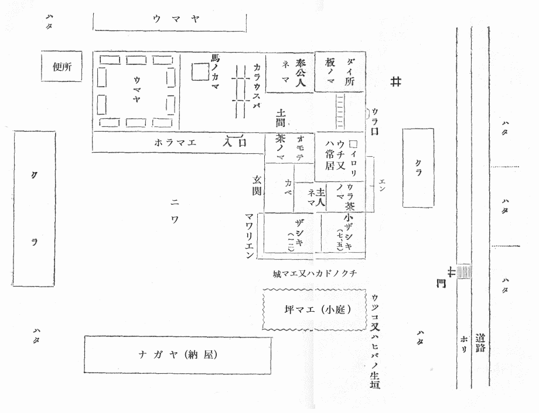
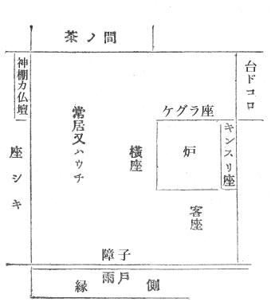
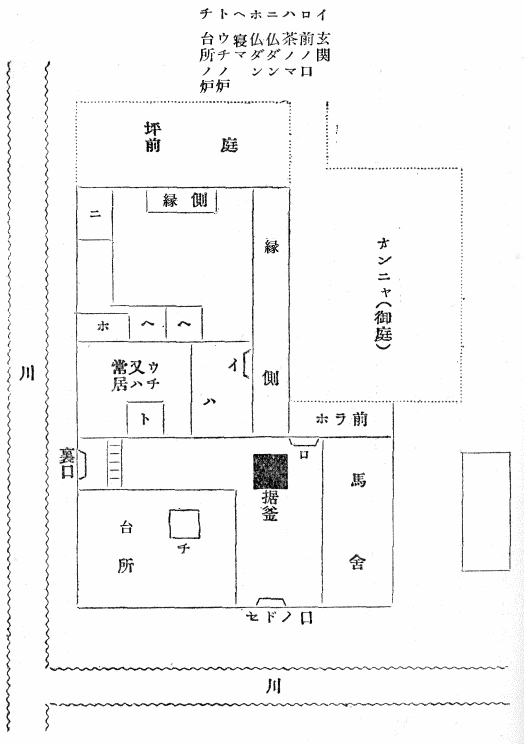

［＃ページの左右中央］
この書を外国に在る人々に呈す
［＃改ページ］
この話はすべて
遠野の人佐々木鏡石君より聞きたり。
昨明治四十二年の二月ごろより始めて夜分おりおり
訪ね
来たりこの話をせられしを筆記せしなり。鏡石君は
話上手にはあらざれども誠実なる人なり。自分もまた一字一句をも
加減せず感じたるままを書きたり。思うに遠野
郷にはこの類の物語なお数百件あるならん。我々はより多くを聞かんことを切望す。国内の山村にして遠野よりさらに物深き所にはまた無数の山神山人の伝説あるべし。願わくはこれを語りて平地人を戦慄せしめよ。この書のごときは
陳勝呉広のみ。
昨年八月の末自分は遠野郷に遊びたり。
花巻より十余里の路上には
町場三ヶ所あり。その他はただ青き山と原野なり。人煙の
稀少なること北海道
石狩の平野よりも
甚だし。或いは新道なるが故に民居の来たり
就ける者少なきか。遠野の城下はすなわち煙花の街なり。馬を駅亭の主人に借りて
独り郊外の村々を
巡りたり。その馬は
黔き海草をもって作りたる
厚総を
掛けたり。
虻多きためなり。
猿ヶ
石の渓谷は土
肥えてよく
拓けたり。路傍に石塔の多きこと諸国その比を知らず。高処より展望すれば
早稲まさに熟し
晩稲は
花盛りにて水はことごとく落ちて川にあり。稲の
色合いは種類によりてさまざまなり。三つ四つ五つの田を続けて稲の色の同じきはすなわち一家に属する田にしていわゆる
名処の同じきなるべし。
小字よりさらに小さき区域の地名は持主にあらざればこれを知らず。古き売買譲与の証文には常に見ゆる所なり。
附馬牛の谷へ越ゆれば
早池峯の山は淡く
霞み山の形は
菅笠のごとくまた
片仮名のへの字に似たり。この谷は稲熟することさらに遅く満目一色に青し。細き田中の道を行けば名を知らぬ鳥ありて
雛を
連れて横ぎりたり。雛の色は黒に白き羽まじりたり。始めは小さき鶏かと思いしが
溝の草に隠れて見えざればすなわち野鳥なることを知れり。天神の山には祭ありて
獅子踊あり。ここにのみは軽く
塵たち
紅き物いささかひらめきて一村の緑に映じたり。獅子踊というは
鹿の
舞なり。鹿の
角をつけたる面を
被り童子五六人剣を抜きてこれとともに舞うなり。笛の調子高く歌は低くして
側にあれども聞きがたし。日は傾きて風吹き酔いて人呼ぶ者の声も
淋しく女は笑い
児は走れどもなお旅愁をいかんともする
能わざりき。
盂蘭盆に新しき仏ある家は紅白の旗を高く
揚げて
魂を招く
風あり。
峠の馬上において東西を指点するにこの旗十数所あり。村人の永住の地を去らんとする者とかりそめに入りこみたる旅人とまたかの
悠々たる霊山とを
黄昏は
徐に来たりて包容し尽したり。遠野郷には八ヶ所の観音堂あり。一木をもって作りしなり。この日
報賽の徒多く岡の上に灯火見え
伏鉦の音聞えたり。道ちがえの
叢の中には
雨風祭の
藁人形あり。あたかもくたびれたる人のごとく
仰臥してありたり。以上は自分が遠野郷にてえたる印象なり。
思うにこの類の書物は少なくも現代の流行にあらず。いかに印刷が容易なればとてこんな本を出版し自己の
狭隘なる趣味をもって他人に
強いんとするは
無作法の
仕業なりという人あらん。されどあえて答う。かかる話を聞きかかる
処を見てきてのちこれを人に語りたがらざる者
果してありや。そのような沈黙にしてかつ
慎み深き人は少なくも自分の友人の中にはあることなし。いわんやわが九百年前の
先輩『今昔物語』のごときはその当時にありてすでに今は昔の話なりしに反しこれはこれ目前の出来事なり。たとえ
敬虔の意と誠実の態度とにおいてはあえて彼を
凌ぐことを
得という能わざらんも人の耳を
経ること多からず人の口と筆とを
倩いたること甚だ
僅なりし点においては彼の淡泊無邪気なる
大納言殿かえって来たり聴くに値せり。近代の
御伽百物語の徒に至りてはその
志やすでに
陋かつ決してその談の
妄誕にあらざることを誓いえず。
窃にもってこれと隣を比するを恥とせり。要するにこの書は現在の事実なり。単にこれのみをもってするも立派なる存在理由ありと信ず。ただ鏡石子は年わずかに二十四五自分もこれに十歳長ずるのみ。今の事業多き時代に生まれながら問題の大小をも
弁えず、その力を用いるところ
当を失えりという人あらば
如何。明神の山の
木兎のごとくあまりにその耳を
尖らしあまりにその眼を丸くし過ぎたりと
責むる人あらば如何。はて是非もなし。この責任のみは自分が負わねばならぬなり。
おきなさび飛ばず鳴かざるをちかたの森のふくろふ笑ふらんかも
柳田国男
［＃改ページ］
（下の数字は話の番号なり、ページ数にはあらず）
地勢
一、五、六七、一一一
神の始
二、六九、七四
里の神
九八
カクラサマ
七二―七四
ゴンゲサマ
一一〇
家の神
一六
オクナイサマ
一四、一五、七〇
オシラサマ
六九
ザシキワラシ
一七、一八
山の神
八九、九一、九三、一〇二、一〇七、一〇八
神女
二七、五四
天狗
二九、六二、九〇
山男
五、六、七、九、二八、三〇、三一、九二
山女
三、四、三四、三五、七五
山の霊異
三二、三三、六一、九五
仙人堂
四九
蝦夷の跡
一一二
塚と森と
六六、一一一、一一三、一一四
姥神
六五、七一
館の址
六七、六八、七六
昔の人
八、一〇、一一、一二、二一、二六、八四
家のさま
八〇、八三
家の盛衰
一三、一八、一九、二四、二五、三八、六三
マヨイガ
六三、六四
前兆
二〇、五二、七八、九六
魂の行方
二二、八六―八八、九五、九七、九九、一〇〇
まぼろし
二三、七七、七九、八一、八二
雪女
一〇三
川童
五五―五九
猿の
経立四五、四六
猿
四七、四八
狼三六―四二
熊
四三
狐
六〇、九四、一〇一
色々の鳥
五一―五三
花
三三、五〇
小正月の行事
一四、一〇二―一〇五
雨風祭
一〇九
昔々
一一五―一一八
歌謡
一一九
［＃改丁］
遠野郷は今の陸中
上閉伊郡の西の半分、山々にて取り
囲まれたる平地なり。
新町村にては、遠野、
土淵、
附馬牛、松崎、
青笹、
上郷、
小友、
綾織、
鱒沢、
宮守、
達曾部の一町十ヶ村に分かつ。近代或いは西閉伊郡とも称し、中古にはまた
遠野保とも呼べり。今日郡役所のある遠野町はすなわち一郷の
町場にして、
南部家一万石の城下なり。城を
横田城ともいう。この地へ行くには
花巻の停車場にて汽車を
下り、
北上川を渡り、その川の支流
猿ヶ
石川の
渓を
伝いて、東の方へ入ること十三里、遠野の町に至る。山奥には珍しき繁華の地なり。伝えいう、遠野郷の地大昔はすべて一円の湖水なりしに、その水猿ヶ石川となりて人界に流れ出でしより、自然にかくのごとき
邑落をなせしなりと。されば谷川のこの猿ヶ石に落合うもの
甚だ多く、俗に
七内八崎ありと称す。
内は沢または谷のことにて、奥州の地名には多くあり。
○遠野郷のトーはもとアイヌ語の湖という語より出でたるなるべし、ナイもアイヌ語なり。
遠野の町は南北の川の
落合にあり。以前は
七七十里とて、七つの渓谷おのおの七十里の奥より
売買の貨物を
聚め、その
市の日は馬千匹、人千人の
賑わしさなりき。四方の山々の中に最も
秀でたるを
早池峯という、北の方
附馬牛の奥にあり。東の方には
六角牛山立てり。
石神という山は附馬牛と
達曾部との間にありて、その高さ前の二つよりも
劣れり。大昔に女神あり、三人の娘を
伴ないてこの高原に来たり、今の
来内村の
伊豆権現の社あるところに
宿りし夜、今夜よき夢を見たらん娘によき山を与うべしと母の神の語りて寝たりしに、夜深く天より
霊華降りて姉の
姫の胸の上に止りしを、末の姫
眼覚めて
窃にこれを取り、わが胸の上に載せたりしかば、ついに最も美しき早池峯の山を得、姉たちは六角牛と石神とを得たり。若き三人の女神おのおの三の山に住し今もこれを領したもう
故に、遠野の女どもはその
妬を
畏れて今もこの山には遊ばずといえり。
○この一里は小道すなわち坂東道なり、一里が五丁または六丁なり。
○タッソベもアイヌ語なるべし。岩手郡玉山村にも同じ大字あり。
○上郷村大字来内、ライナイもアイヌ語にてライは死のことナイは沢なり、水の静かなるよりの名か。
山々の奥には山人住めり。
栃内村
和野の佐々木
嘉兵衛という人は今も七十余にて生存せり。この
翁若かりしころ猟をして山奥に入りしに、
遥かなる岩の上に美しき女一人ありて、長き黒髪を
梳りていたり。顔の色きわめて白し。不敵の男なれば
直に
銃を差し向けて打ち放せしに
弾に応じて倒れたり。そこに
馳けつけて見れば、身のたけ高き女にて、解きたる黒髪はまたそのたけよりも長かりき。のちの
験にせばやと思いてその髪をいささか切り取り、これを
綰ねて
懐に入れ、やがて家路に向いしに、道の程にて
耐えがたく睡眠を
催しければ、しばらく
物蔭に立寄りてまどろみたり。その間
夢と
現との境のようなる時に、これも
丈の高き男一人近よりて懐中に手を差し入れ、かの綰ねたる黒髪を取り返し立ち去ると見ればたちまち
睡は覚めたり。山男なるべしといえり。
○土淵村大字栃内。
山口村の吉兵衛という家の主人、
根子立という山に入り、
笹を
苅りて
束となし
担ぎて立上らんとする時、笹原の上を風の吹き渡るに心づきて見れば、奥の方なる林の中より若き女の
穉児を
負いたるが笹原の上を歩みて此方へ来るなり。きわめてあでやかなる女にて、これも長き黒髪を垂れたり。児を
結いつけたる
紐は藤の
蔓にて、
着たる衣類は世の常の
縞物なれど、
裾のあたりぼろぼろに破れたるを、いろいろの木の葉などを添えて
綴りたり。足は地に
着くとも覚えず。事もなげに此方に近より、男のすぐ前を通りて
何方へか行き過ぎたり。この人はその折の
怖ろしさより
煩い
始めて、久しく
病みてありしが、近きころ
亡せたり。
○土淵村大字山口、吉兵衛は代々の通称なればこの主人もまた吉兵衛ならん。
遠野郷より海岸の
田ノ
浜、
吉利吉里などへ越ゆるには、昔より
笛吹峠という
山路あり。山口村より
六角牛の方へ入り路のりも近かりしかど、近年この峠を越ゆる者、山中にて必ず山男山女に
出逢うより、誰もみな
怖ろしがりて次第に往来も
稀になりしかば、ついに別の路を
境木峠という方に開き、
和山を
馬次場として今は此方ばかりを越ゆるようになれり。二里以上の
迂路なり。
○山口は六角牛に登る山口なれば村の名となれるなり。
遠野郷にては豪農のことを今でも長者という。青笹村大字
糠前の長者の娘、ふと物に取り隠されて年久しくなりしに、同じ村の何某という
猟師、
或る日山に入りて一人の女に
遭う。怖ろしくなりてこれを撃たんとせしに、何おじではないか、ぶつなという。驚きてよく見れば
彼の長者がまな娘なり。
何故にこんな
処にはおるぞと問えば、或る物に取られて今はその妻となれり。子もあまた
生みたれど、すべて
夫が食い
尽して一人此のごとくあり。おのれはこの地に一生涯を送ることなるべし。人にも言うな。御身も危うければ
疾く帰れというままに、その在所をも問い
明らめずして
遁げ
還れりという。
○糠の前は糠の森の前にある村なり、糠の森は諸国の糠塚と同じ。遠野郷にも糠森・糠塚多くあり。
上郷村の民家の娘、
栗を拾いに山に入りたるまま帰り
来たらず。家の者は死したるならんと思い、女のしたる
枕を
形代として葬式を
執行い、さて二三年を過ぎたり。しかるにその村の者猟をして
五葉山の腰のあたりに入りしに、大なる岩の
蔽いかかりて岩窟のようになれるところにて、
図らずこの女に逢いたり。互いに打ち驚き、いかにしてかかる山にはおるかと問えば、女の
曰く、山に入りて恐ろしき人にさらわれ、こんなところに来たるなり。
遁げて帰らんと思えど
些の
隙もなしとのことなり。その人はいかなる人かと問うに、自分には
並の人間と見ゆれど、ただ
丈きわめて高く眼の色少し
凄しと思わる。子供も幾人か生みたれど、我に似ざれば我子にはあらずといいて
食うにや殺すにや、みないずれへか持ち去りてしまうなりという。まことに我々と同じ人間かと押し返して問えば、衣類なども世の常なれど、ただ眼の色少しちがえり。
一市間に一度か二度、同じようなる人四五人集まりきて、何事か話をなし、やがて
何方へか出て行くなり。食物など外より持ち来たるを見れば町へも出ることならん。かく言ううちにも今にそこへ帰って来るかも知れずという故、猟師も怖ろしくなりて帰りたりといえり。二十年ばかりも以前のことかと思わる。
○一市間は遠野の町の市の日と次の市の日の間なり。月六度の市なれば一市間はすなわち五日のことなり。
黄昏に女や子供の家の外に出ている者はよく
神隠しにあうことは
他の国々と同じ。松崎村の
寒戸というところの民家にて、若き娘
梨の
樹の下に
草履を
脱ぎ置きたるまま
行方を知らずなり、三十年あまり過ぎたりしに、或る日親類知音の人々その家に
集まりてありしところへ、きわめて老いさらぼいてその女帰り来たれり。いかにして帰って来たかと問えば人々に逢いたかりし故帰りしなり。さらばまた行かんとて、再び
跡を
留めず行き
失せたり。その日は風の
烈しく吹く日なりき。されば遠野郷の人は、今でも風の騒がしき日には、きょうはサムトの
婆が帰って来そうな日なりという。
菊池
弥之助という老人は若きころ
駄賃を業とせり。笛の名人にて
夜通しに馬を追いて行く時などは、よく笛を吹きながら行きたり。ある
薄月夜に、あまたの仲間の者とともに浜へ越ゆる境木峠を行くとて、また笛を取り出して吹きすさみつつ、
大谷地というところの上を過ぎたり。大谷地は深き谷にて
白樺の林しげく、その下は
葦など生じ
湿りたる沢なり。この時谷の底より何者か高き声にて面白いぞーと
呼ばわる者あり。一同ことごとく色を失い遁げ走りたりといえり。
○ヤチはアイヌ語にて湿地の義なり、内地に多くある地名なり。またヤツともヤトともヤともいう。
この男ある奥山に入り、
茸を採るとて小屋を
掛け
宿りてありしに、深夜に遠きところにてきゃーという女の叫び声聞え胸を
轟かしたることあり。里へ帰りて見れば、その同じ夜、時も同じ刻限に、自分の妹なる女その
息子のために殺されてありき。
この女というは母一人子一人の家なりしに、
嫁と
姑との仲
悪しくなり、嫁はしばしば親里へ行きて帰り来ざることあり。その日は嫁は家にありて打ち
臥しておりしに、昼のころになり突然と
倅のいうには、ガガはとても
生かしては置かれぬ、
今日はきっと殺すべしとて、大なる
草苅鎌を取り出し、ごしごしと
磨ぎ始めたり。そのありさまさらに
戯言とも見えざれば、母はさまざまに事を
分けて
詫びたれども少しも聴かず。嫁も起き
出でて泣きながら
諫めたれど、
露従う色もなく、やがて母が
遁れ出でんとする
様子あるを見て、前後の戸口をことごとく
鎖したり。便用に行きたしといえば、おのれみずから外より便器を持ち来たりてこれへせよという。夕方にもなりしかば母もついにあきらめて、大なる
囲炉裡の
側にうずくまりただ泣きていたり。
倅はよくよく
磨ぎたる大鎌を手にして近より来たり、まず左の肩口を目がけて
薙ぐようにすれば、鎌の
刃先炉の
上の
火棚に
引っかかりてよく
斬れず。その時に母は深山の奥にて弥之助が聞きつけしようなる叫び声を立てたり。二度目には右の肩より
切り
下げたるが、これにてもなお
死絶えずしてあるところへ、
里人ら驚きて
馳せつけ倅を
取り
抑え直に警察官を
呼びて
渡したり。警官がまだ棒を持ちてある時代のことなり。母親は男が
捕えられ引き立てられて行くを見て、滝のように血の流るる中より、おのれは
恨も
抱かずに死ぬるなれば、孫四郎は
宥したまわれという。これを聞きて心を
動かさぬ者はなかりき。孫四郎は途中にてもその鎌を振り上げて巡査を追い廻しなどせしが、狂人なりとて放免せられて家に帰り、今も生きて里にあり。
○ガガは方言にて母ということなり。
土淵村山口に
新田乙蔵という老人あり。村の人は
乙爺という。今は九十に近く
病みてまさに
死なんとす。
年頃遠野郷の昔の話をよく知りて、誰かに話して聞かせ置きたしと
口癖のようにいえど、あまり
臭ければ立ち寄りて聞かんとする人なし。
処々の
館の
主の伝記、
家々の盛衰、昔よりこの
郷に
行われし歌の数々を始めとして、深山の伝説またはその奥に住める人々の物語など、この老人最もよく知れり。
○惜むべし、乙爺は明治四十二年の夏の始めになくなりたり。
この老人は数十年の間山の中に
独りにて住みし人なり。よき
家柄なれど、若きころ財産を傾け失いてより、世の中に思いを
絶ち、峠の上に
小屋を掛け、
甘酒を
往来の人に売りて活計とす。
駄賃の
徒はこの翁を
父親のように思いて、
親しみたり。少しく収入の
余あれば、町に
下りきて酒を飲む。
赤毛布にて作りたる
半纏を着て、赤き
頭巾を
被り、酔えば、町の中を
躍りて帰るに巡査もとがめず。いよいよ老衰して後、
旧里に帰りあわれなる
暮しをなせり。子供はすべて北海道へ行き、翁ただ一人なり。
部落には必ず一戸の旧家ありて、オクナイサマという神を
祀る。その家をば
大同という。この神の
像は
桑の木を
削りて
顔を
描き、四角なる
布の
真中に穴を
明け、これを
上より
通して
衣裳とす。正月の十五日には
小字中の人々この家に集まり
来たりてこれを祭る。またオシラサマという神あり。この神の像もまた同じようにして造り
設け、これも正月の十五日に
里人集まりてこれを祭る。その式には
白粉を神像の顔に塗ることあり。大同の家には必ず
畳一帖の
室あり。この
部屋にて
夜寝る者はいつも不思議に
遭う。
枕を
反すなどは常のことなり。或いは誰かに
抱き
起こされ、または室より
突き
出さるることもあり。およそ静かに眠ることを許さぬなり。
○オシラサマは双神なり。アイヌの中にもこの神あること『蝦夷風俗彙聞』に見ゆ。
○羽後苅和野の町にて市の神の神体なる陰陽の神に正月十五日白粉を塗りて祭ることあり。これと似たる例なり。
オクナイサマを祭れば
幸多し。土淵村大字
柏崎の長者阿部氏、村にては
田圃の
家という。この家にて或る年
田植の
人手足らず、
明日は
空も
怪しきに、わずかばかりの田を植え残すことかなどつぶやきてありしに、ふと
何方よりともなく
丈低き
小僧一人来たりて、おのれも手伝い申さんというに
任せて
働かせて置きしに、
午飯時に
飯を食わせんとて
尋ねたれど見えず。やがて再び帰りきて終日、
代を
掻きよく
働きてくれしかば、その日に植えはてたり。どこの人かは知らぬが、晩にはきて物を
食いたまえと
誘いしが、日暮れてまたその
影見えず。家に帰りて見れば、
縁側に小さき
泥の
足跡あまたありて、だんだんに座敷に入り、オクナイサマの
神棚のところに
止りてありしかば、さてはと思いてその
扉を開き見れば、神像の腰より下は田の
泥にまみれていませし
由。
コンセサマを祭れる家も少なからず。この神の神体はオコマサマとよく似たり。オコマサマの社は里に多くあり。石または木にて男の物を作りて
捧ぐるなり。今はおいおいとその事少なくなれり。
旧家にはザシキワラシという神の住みたもう家少なからず。この神は多くは十二三ばかりの童児なり。おりおり人に姿を見することあり。土淵村大字
飯豊の
今淵勘十郎という人の家にては、近きころ高等女学校にいる娘の休暇にて帰りてありしが、或る日
廊下にてはたとザシキワラシに行き
逢い大いに驚きしことあり。これは
正しく男の
児なりき。同じ村山口なる佐々木氏にては、母人ひとり
縫物しておりしに、次の間にて紙のがさがさという音あり。この室は家の主人の
部屋にて、その時は東京に行き不在の折なれば、怪しと思いて板戸を開き見るに何の影もなし。しばらくの
間坐りて居ればやがてまた
頻に鼻を
鳴らす音あり。さては
座敷ワラシなりけりと思えり。この家にも座敷ワラシ住めりということ、久しき以前よりの
沙汰なりき。この神の
宿りたもう家は富貴自在なりということなり。
○ザシキワラシは座敷童衆なり。この神のこと『石神問答』中にも記事あり。
ザシキワラシまた女の児なることあり。同じ山口なる旧家にて山口孫左衛門という家には、童女の神二人いませりということを久しく言い伝えたりしが、或る年同じ村の何某という男、町より帰るとて
留場の橋のほとりにて
見馴れざる二人のよき娘に逢えり。物思わしき様子にて此方へ
来たる。お前たちはどこから来たと問えば、おら山口の孫左衛門がところからきたと答う。これから何処へ行くのかと聞けば、それの村の何某が家にと答う。その何某はやや離れたる村にて、今も立派に暮せる豪農なり。さては孫左衛門が世も末だなと思いしが、それより久しからずして、この家の主従二十幾人、
茸の毒に
中りて一日のうちに死に
絶え、七歳の女の子一人を残せしが、その女もまた年老いて子なく、近きころ
病みて失せたり。
孫左衛門が家にては、或る日
梨の木のめぐりに
見馴れぬ
茸のあまた
生えたるを、食わんか食うまじきかと男どもの評議してあるを聞きて、最後の代の孫左衛門、食わぬがよしと制したれども、下男の一人がいうには、いかなる茸にても
水桶の中に入れて
苧殻をもってよくかき
廻してのち食えば決して
中ることなしとて、一同この言に従い家内ことごとくこれを食いたり。七歳の女の
児はその日外に
出でて遊びに気を取られ、昼飯を食いに帰ることを忘れしために助かりたり。不意の主人の死去にて人々の動転してある間に、遠き近き親類の人々、或いは生前に
貸ありといい、或いは約束ありと称して、家の貨財は
味噌の
類までも取り去りしかば、この村
草分の長者なりしかども、一朝にして
跡方もなくなりたり。
この兇変の前にはいろいろの前兆ありき。男ども
苅置きたる
秣を出すとて三ツ歯の
鍬にて
掻きまわせしに、大なる
蛇を
見出したり。これも殺すなと主人が制せしをも聴かずして打ち殺したりしに、その跡より秣の下にいくらともなき蛇ありて、うごめき出でたるを、男ども面白半分にことごとくこれを殺したり。さて取り捨つべきところもなければ、屋敷の
外に穴を掘りてこれを
埋め、蛇塚を作る。その蛇は
簣に
何荷ともなくありたりといえり。
右の孫左衛門は村には珍しき学者にて、常に京都より和漢の書を取り寄せて読み
耽りたり。少し変人という方なりき。
狐と親しくなりて家を富ます術を得んと思い立ち、まず庭の中に
稲荷の
祠を
建て、自身京に
上りて正一位の神階を
請けて帰り、それよりは日々一枚の
油揚を欠かすことなく、手ずから社頭に
供えて拝をなせしに、のちには狐
馴れて近づけども
遁げず。手を延ばしてその首を
抑えなどしたりという。村にありし薬師の
堂守は、わが仏様は何ものをも
供えざれども、孫左衛門の神様よりは
御利益ありと、たびたび笑いごとにしたりとなり。
佐々木氏の
曾祖母年よりて死去せし時、
棺に取り
納め親族の者集まりきてその夜は一同座敷にて寝たり。死者の娘にて乱心のため離縁せられたる婦人もまたその中にありき。
喪の間は火の
気を
絶やすことを
忌むがところの
風なれば、祖母と母との二人のみは、大なる
囲炉裡の
両側に
坐り、
母人は
旁に
炭籠を置き、おりおり炭を
継ぎてありしに、ふと裏口の方より足音してくる者あるを見れば、
亡くなりし老女なり。
平生腰かがみて
衣物の
裾の引きずるを、三角に取り上げて前に縫いつけてありしが、まざまざとその通りにて、
縞目にも
見覚えあり。あなやと思う間もなく、二人の女の坐れる炉の脇を通り行くとて、裾にて
炭取にさわりしに、丸き炭取なればくるくるとまわりたり。母人は
気丈の人なれば振り返りあとを見送りたれば、親縁の人々の打ち
臥したる座敷の方へ近より行くと思うほどに、かの狂女のけたたましき声にて、おばあさんが来たと叫びたり。その余の人々はこの声に
睡を
覚しただ打ち驚くばかりなりしといえり。
○マーテルリンクの『侵入者』を想い起こさしむ。
同じ人の二七日の
逮夜に、知音の者集まりて、夜
更くるまで念仏を
唱え立ち帰らんとする時、
門口の石に腰掛けてあちらを向ける老女あり。そのうしろ
付正しく
亡くなりし人の通りなりき。これは
数多の人見たる
故に誰も疑わず。いかなる
執着のありしにや、ついに知る人はなかりしなり。
村々の旧家を
大同というは、大同元年に
甲斐国より移り来たる家なればかくいうとのことなり。大同は田村将軍征討の時代なり。甲斐は南部家の本国なり。二つの伝説を混じたるに
非ざるか。
○大同は大洞かも知れず、洞とは東北にて家門または族ということなり。『常陸国志』に例あり、ホラマエという語のちに見ゆ。
大同の祖先たちが、始めてこの地方に到着せしは、あたかも
歳の
暮にて、春のいそぎの
門松を、まだ
片方はえ立てぬうちに
早元日になりたればとて、今もこの家々にては吉例として門松の片方を地に伏せたるままにて、
標縄を引き渡すとのことなり。
柏崎の
田圃のうちと称する阿倍氏はことに聞えたる旧家なり。この家の先代に彫刻に
巧なる人ありて、遠野一郷の神仏の像にはこの人の作りたる者多し。
早池峯より出でて東北の方
宮古の海に流れ入る川を
閉伊川という。その流域はすなわち下閉伊郡なり。遠野の町の中にて今は
池の
端という家の先代の主人、宮古に行きての帰るさ、この川の
原台の
淵というあたりを通りしに、若き女ありて一封の手紙を
托す。遠野の町の後なる物見山の中腹にある沼に行きて、手を
叩けば
宛名の人いで
来べしとなり。この人
請け合いはしたれども
路々心に掛りてとつおいつせしに、一人の
六部に行き
逢えり。この手紙を開きよみて
曰く、これを持ち行かば
汝の身に大なる
災あるべし。書き
換えて取らすべしとて更に別の手紙を与えたり。これを持ちて沼に行き教えのごとく手を叩きしに、果して若き女いでて手紙を受け取り、その礼なりとてきわめて小さき
石臼をくれたり。米を一粒入れて
回せば下より黄金
出づ。この
宝物の力にてその家やや富有になりしに、妻なる者慾深くして、一度にたくさんの米をつかみ入れしかば、石臼はしきりに自ら回りて、ついには朝ごとに主人がこの石臼に供えたりし水の、小さき
窪みの中に
溜りてありし中へ
滑り入りて見えずなりたり。その水溜りはのちに小さき池になりて、今も家の
旁にあり。家の名を池の端というもその
為なりという。
○この話に似たる物語西洋にもあり、偶合にや。
始めて早池峯に
山路をつけたるは、附馬牛村の何某という猟師にて、時は遠野の南部家
入部の後のことなり。その頃までは土地の者一人としてこの山には入りたる者なかりしと。この猟師半分ばかり道を開きて、山の半腹に
仮小屋を作りておりしころ、
或る日
炉の上に
餅をならべ焼きながら食いおりしに、小屋の外を通る者ありて
頻に中を
窺うさまなり。よく見れば大なる坊主なり。やがて小屋の中に入り来たり、さも珍しげに餅の焼くるを見てありしが、ついにこらえ
兼ねて手をさし延べて取りて食う。猟師も恐ろしければ自らもまた取りて与えしに、
嬉しげになお食いたり。餅
皆になりたれば帰りぬ。次の日もまた来るならんと思い、餅によく似たる白き石を二つ三つ、餅にまじえて炉の上に載せ置きしに、焼けて火のようになれり。案のごとくその坊主きょうもきて、餅を取りて食うこと昨日のごとし。餅
尽きてのちその白石をも同じように口に入れたりしが、大いに驚きて小屋を飛び出し姿見えずなれり。のちに谷底にてこの坊主の死してあるを見たりといえり。
○北上川の中古の大洪水に白髪水というがあり、白髪の姥を欺き餅に似たる焼石を食わせし祟なりという。この話によく似たり。
鶏頭山は早池峯の前面に立てる
峻峯なり。
麓の里にてはまた
前薬師ともいう。
天狗住めりとて、早池峯に登る者も決してこの山は
掛けず。山口のハネトという家の主人、佐々木氏の祖父と竹馬の友なり。きわめて無法者にて、
鉞にて草を
苅り
鎌にて土を掘るなど、若き時は乱暴の
振舞のみ多かりし人なり。或る時人と
賭をして一人にて前薬師に登りたり。帰りての物語に曰く、頂上に大なる岩あり、その岩の上に大男三人いたり。前にあまたの金銀をひろげたり。この男の近よるを見て、
気色ばみて振り返る、その眼の光きわめて恐ろし。早池峯に登りたるが
途に迷いて来たるなりと言えば、
然らば送りて
遣るべしとて
先に立ち、
麓近きところまで来たり、眼を
塞げと言うままに、暫時そこに立ちている間に、たちまち異人は見えずなりたりという。
小国村の何某という男、或る日早池峯に竹を
伐りに行きしに、
地竹のおびただしく茂りたる中に、大なる男一人寝ていたるを見たり。地竹にて編みたる三尺ばかりの
草履を
脱ぎてあり。
仰に
臥して大なる
鼾をかきてありき。
○下閉伊郡小国村大字小国。
○地竹は深山に生ずる低き竹なり。
遠野郷の民家の子女にして、異人にさらわれて行く者年々多くあり。ことに女に多しとなり。
千晩ヶ
岳は山中に
沼あり。この谷は物すごく
腥き
臭のするところにて、この山に入り帰りたる者はまことに
少なし。昔何の
隼人という猟師あり。その子孫今もあり。白き鹿を見てこれを追いこの谷に千晩こもりたれば山の名とす。その白鹿撃たれて遁げ、次の山まで行きて
片肢折れたり。その山を今
片羽山という。さてまた前なる山へきてついに死したり。その地を
死助という。
死助権現とて
祀れるはこの白鹿なりという。
○宛然として古風土記をよむがごとし。
白望の山に行きて
泊れば、深夜にあたりの
薄明るくなることあり。秋のころ
茸を採りに行き山中に宿する者、よくこの事に逢う。また谷のあなたにて大木を
伐り倒す音、歌の声など
聞ゆることあり。この山の大さは
測るべからず。五月に
萱を苅りに行くとき、遠く望めば
桐の花の咲き
満ちたる山あり。あたかも
紫の雲のたなびけるがごとし。されどもついにそのあたりに近づくこと
能わず。かつて茸を採りに入りし者あり。白望の山奥にて金の
樋と金の
杓とを見たり。持ち帰らんとするにきわめて重く、
鎌にて
片端を
削り取らんとしたれどそれもかなわず。また
来んと思いて樹の皮を白くし
栞としたりしが、次の日人々とともに行きてこれを求めたれど、ついにその木のありかをも見出しえずしてやみたり。
白望の山続きに
離森というところあり。その
小字に長者屋敷というは、全く無人の境なり。ここに行きて炭を焼く者ありき。或る夜その小屋の
垂菰をかかげて、内を
窺う者を見たり。髪を長く二つに分けて
垂れたる女なり。このあたりにても深夜に女の叫び声を聞くことは珍しからず。
佐々木氏の祖父の弟、白望に茸を採りに行きて
宿りし夜、谷を隔てたるあなたの大なる森林の前を横ぎりて、女の走り行くを見たり。中空を走るように思われたり。待てちゃアと二声ばかり
呼ばわりたるを聞けりとぞ。
猿の
経立、
御犬の経立は恐ろしきものなり。
御犬とは
狼のことなり。山口の村に近き
二ツ
石山は岩山なり。ある雨の日、小学校より帰る子どもこの山を見るに、
処々の岩の上に御犬うずくまりてあり。やがて首を
下より
押しあぐるようにしてかわるがわる
吠えたり。正面より見れば
生まれ
立ての馬の子ほどに見ゆ。
後から見れば
存外小さしといえり。御犬のうなる声ほど
物凄く恐ろしきものはなし。
境木峠と
和山峠との間にて、昔は
駄賃馬を
追う者、しばしば狼に逢いたりき。
馬方らは夜行には、たいてい十人ばかりも
群をなし、その一人が
牽く馬は
一端綱とてたいてい五六七
匹までなれば、常に四五十匹の馬の数なり。ある時二三百ばかりの狼追い来たり、その足音山もどよむばかりなれば、あまりの恐ろしさに馬も人も一所に集まりて、そのめぐりに火を焼きてこれを防ぎたり。されどなおその火を躍り越えて入り来るにより、ついには馬の
綱を
解きこれを
張り
回らせしに、
穽などなりとや思いけん、それよりのちは中に飛び入らず。遠くより
取り
囲みて夜の
明るまで吠えてありきとぞ。
小友村の旧家の主人にて今も生存せる
某爺という人、町より帰りに
頻に御犬の
吠ゆるを聞きて、酒に酔いたればおのれもまたその声をまねたりしに、狼も吠えながら
跡より来るようなり。恐ろしくなりて急ぎ家に帰り入り、門の戸を
堅く
鎖して
打ち
潜みたれども、夜通し狼の家をめぐりて吠ゆる声やまず。
夜明けて見れば、馬屋の
土台の下を掘り
穿ちて中に入り、馬の七頭ありしをことごとく食い殺していたり。この家はそのころより産やや傾きたりとのことなり。
佐々木君幼きころ、祖父と二人にて山より帰りしに、村に近き谷川の岸の上に、大なる鹿の倒れてあるを見たり。横腹は破れ、殺されて
間もなきにや、そこよりはまだ
湯気立てり。祖父の曰く、これは狼が食いたるなり。この皮ほしけれども御犬は必ずどこかこの近所に隠れて見ておるに相違なければ、取ることができぬといえり。
草の長さ三寸あれば狼は身を隠すといえり。
草木の色の移り行くにつれて、狼の毛の色も
季節ごとに変りて行くものなり。
和野の佐々木嘉兵衛、或る年
境木越の
大谷地へ狩にゆきたり。
死助の方より走れる原なり。秋の暮のことにて木の葉は散り尽し山もあらわなり。
向うの峯より何百とも知れぬ狼此方へ
群れて走りくるを見て恐ろしさに堪えず、樹の
梢に
上りてありしに、その樹の下を
夥しき足音して走り過ぎ北の方へ行けり。そのころより遠野郷には狼甚だ少なくなれりとのことなり。
六角牛山の
麓にオバヤ、板小屋などいうところあり。広き
萱山なり。村々より
苅りに行く。ある年の秋
飯豊村の者ども萱を苅るとて、岩穴の中より狼の子三匹を見出し、その二つを殺し一つを持ち帰りしに、その日より狼の
飯豊衆の馬を
襲うことやまず。
外の村々の人馬にはいささかも害をなさず。飯豊衆相談して狼狩をなす。その中には
相撲を取り
平生力自慢の者あり。さて野に
出でて見るに、
雄の狼は遠くにおりて
来たらず。
雌狼一つ鉄という男に飛びかかりたるを、ワッポロを脱ぎて
腕に巻き、やにわにその狼の口の中に突き込みしに、狼これを
噛む。なお強く突き入れながら人を
喚ぶに、誰も誰も
怖れて近よらず。その間に鉄の腕は狼の腹まで
入り、狼は苦しまぎれに鉄の腕骨を
噛み
砕きたり。狼はその場にて死したれども、鉄も
担がれて帰り
程なく死したり。
○ワッポロは上羽織のことなり。
一昨年の『遠野新聞』にもこの記事を載せたり。
上郷村の熊という男、友人とともに雪の日に六角牛に狩に行き谷深く入りしに、熊の足跡を見出でたれば、
手分してその跡を

め、自分は峯の方を行きしに、とある岩の
陰より大なる熊此方を見る。
矢頃あまりに近かりしかば、銃をすてて熊に
抱えつき雪の上を
転びて、谷へ下る。
連の男これを救わんと思えども力及ばず。やがて谷川に落ち入りて、人の熊
下になり水に沈みたりしかば、その
隙に獣の熊を打ち取りぬ。水にも
溺れず、
爪の傷は数ヶ所受けたれども命に
障ることはなかりき。
六角牛の峯続きにて、
橋野という村の上なる山に
金坑あり。この鉱山のために炭を焼きて生計とする者、これも笛の
上手にて、ある日
昼の
間小屋におり、
仰向に
寝転びて笛を吹きてありしに、小屋の口なる
垂菰をかかぐる者あり。驚きて見れば猿の
経立なり。恐ろしくて起き直りたれば、おもむろに
彼方へ走り行きぬ。
○上閉伊郡栗橋村大字橋野。
猿の
経立はよく人に似て、女色を好み里の婦人を盗み去ること多し。
松脂を毛に
塗り砂をその上につけておる故、
毛皮は
鎧のごとく鉄砲の
弾も
通らず。
栃内村の
林崎に住む何某という男、今は五十に近し。十年あまり前のことなり。六角牛山に鹿を撃ちに行き、オキを吹きたりしに、猿の経立あり、これを
真の鹿なりと思いしか、
地竹を手にて
分けながら、大なる口をあけ嶺の方より
下り来たれり。
胆潰れて笛を吹きやめたれば、やがて
反れて谷の方へ走り行きたり。
○オキとは鹿笛のことなり。
この地方にて子供をおどす
言葉に、六角牛の猿の経立が来るぞということ常の事なり。この山には猿多し。
緒
の
滝を見に行けば、
崖の樹の
梢にあまたおり、人を見れば
遁げながら木の
実などを
擲ちて行くなり。
仙人峠にもあまた猿おりて行人に
戯れ石を打ちつけなどす。
仙人峠は登り十五里
降り十五里あり。その中ほどに仙人の像を祀りたる堂あり。この堂の
壁には旅人がこの山中にて遭いたる不思議の出来事を書き
識すこと昔よりの
習なり。例えば、我は越後の者なるが、何月何日の夜、この
山路にて若き女の髪を
垂れたるに逢えり。こちらを見てにこと笑いたりという
類なり。またこの所にて猿に
悪戯をせられたりとか、三人の盗賊に逢えりというようなる事をも
記せり。
○この一里も小道なり。
死助の山にカッコ花あり。遠野郷にても珍しという花なり。五月
閑古鳥の
啼くころ、女や子どもこれを
採りに山へ行く。
酢の中に
漬けて置けば
紫色になる。
酸漿の
実のように吹きて遊ぶなり。この花を採ることは若き者の最も大なる遊楽なり。
山にはさまざまの鳥
住めど、最も
寂しき声の鳥はオット鳥なり。夏の
夜中に
啼く。浜の
大槌より
駄賃附の者など峠を越え来たれば、
遥に谷底にてその声を聞くといえり。昔ある長者の娘あり。またある長者の男の子と
親しみ、山に行きて遊びしに、男見えずなりたり。夕暮になり夜になるまで
探しあるきしが、これを見つくることをえずして、ついにこの鳥になりたりという。オットーン、オットーンというは
夫のことなり。末の方かすれてあわれなる
鳴声なり。
馬追鳥は
時鳥に似て
少し大きく、
羽の色は赤に茶を
帯び、肩には馬の
綱のようなる
縞あり。胸のあたりにクツゴコ（口籠）のようなるかたあり。これも
或る長者が家の奉公人、山へ馬を
放しに行き、家に帰らんとするに一匹不足せり。夜通しこれを求めあるきしがついにこの鳥となる。アーホー、アーホーと啼くはこの地方にて野におる馬を追う声なり。年により馬追鳥
里にきて啼くことあるは
飢饉の前兆なり。深山には常に住みて啼く声を聞くなり。
○クツゴコは馬の口に嵌める網の袋なり。
郭公と
時鳥とは昔ありし
姉妹なり。郭公は姉なるがある時
芋を掘りて焼き、そのまわりの
堅きところを自ら食い、中の
軟かなるところを妹に与えたりしを、妹は姉の食う
分は一層
旨かるべしと想いて、
庖丁にてその姉を殺せしに、たちまちに鳥となり、ガンコ、ガンコと啼きて飛び去りぬ。ガンコは方言にて堅いところということなり。妹さてはよきところをのみおのれにくれしなりけりと思い、悔恨に堪えず、やがてまたこれも鳥になりて庖丁かけたと啼きたりという。遠野にては時鳥のことを庖丁かけと呼ぶ。
盛岡辺にては時鳥はどちゃへ飛んでたと啼くという。
○この芋は馬鈴薯のことなり。
閉伊川の
流れには
淵多く恐ろしき伝説少なからず。小国川との落合に近きところに、
川井という村あり。その村の長者の奉公人、ある淵の上なる山にて樹を伐るとて、
斧を水中に
取り
落したり。主人の物なれば淵に入りてこれを
探りしに、水の底に入るままに物音聞ゆ。これを求めて行くに岩の陰に家あり。奥の方に美しき娘
機を織りていたり。そのハタシに彼の斧は立てかけてありたり。これを返したまわらんという時、振り返りたる女の顔を見れば、二三年前に身まかりたる我が主人の娘なり。斧は返すべければ我がこの
所にあることを人にいうな。その礼としてはその方
身上良くなり、奉公をせずともすむようにして
遣らんといいたり。そのためなるか否かは知らず、その後
胴引などいう
博奕に不思議に勝ち
続けて
金溜り、ほどなく奉公をやめ家に引き込みて
中ぐらいの農民になりたれど、この男は
疾くに物忘れして、この娘のいいしことも心づかずしてありしに、或る日同じ淵の
辺を
過ぎて町へ行くとて、ふと前の事を思い出し、
伴なえる者に以前かかることありきと語りしかば、やがてその
噂は近郷に伝わりぬ。その頃より男は家産再び
傾き、また昔の主人に奉公して年を経たり。家の主人は何と思いしにや、その淵に
何荷ともなく熱湯を
注ぎ入れなどしたりしが、何の効もなかりしとのことなり。
○下閉伊郡川井村大字川井、川井はもちろん川合の義なるべし。
川には
川童多く住めり。猿ヶ石川ことに多し。松崎村の
川端の
家にて、二代まで続けて川童の子を
孕みたる者あり。生れし子は
斬り
刻みて
一升樽に入れ、土中に
埋めたり。その
形きわめて醜怪なるものなりき。女の
婿の里は
新張村の何某とて、これも川端の家なり。その主人
人にその
始終を語れり。かの家の者一同ある日
畠に行きて夕方に帰らんとするに、女川の
汀に
踞りてにこにこと笑いてあり。次の日は
昼の休みにまたこの事あり。かくすること日を重ねたりしに、次第にその女のところへ村の何某という者
夜々通うという
噂立ちたり。始めには婿が浜の方へ
駄賃附に行きたる
留守をのみ
窺いたりしが、のちには
婿と
寝たる
夜さえくるようになれり。川童なるべしという評判だんだん高くなりたれば、一族の者集まりてこれを守れどもなんの
甲斐もなく、婿の母も行きて娘の
側に
寝たりしに、深夜にその娘の笑う声を聞きて、さては来てありと知りながら身動きもかなわず、人々いかにともすべきようなかりき。その産はきわめて難産なりしが、或る者のいうには、
馬槽に水をたたえその中にて
産まば安く産まるべしとのことにて、これを試みたれば果してその通りなりき。その子は手に
水掻あり。この娘の母もまたかつて川童の子を産みしことありという。二代や三代の因縁にはあらずという者もあり。この家も
如法の豪家にて何の某という士族なり。村会議員をしたることもあり。
上郷村の何某の家にても川童らしき物の子を
産みたることあり。
確なる証とてはなけれど、
身内真赤にして口大きく、まことにいやな子なりき。
忌わしければ
棄てんとてこれを携えて道ちがえに持ち行き、そこに置きて一間ばかりも離れたりしが、ふと思い直し、惜しきものなり、売りて見せ物にせば金になるべきにとて立ち帰りたるに、早取り隠されて見えざりきという。
○道ちがえは道の二つに別かるるところすなわち追分なり。
川の岸の
砂の上には川童の
足跡というものを見ること決して珍しからず。雨の日の翌日などはことにこの事あり。猿の足と同じく
親指は離れて人間の手の
跡に似たり。長さは三寸に足らず。指先のあとは人ののように明らかには見えずという。
小烏瀬川の
姥子淵の辺に、
新屋の
家という
家あり。ある日
淵へ馬を
冷しに行き、
馬曳の子は
外へ遊びに行きし間に、川童出でてその馬を引き込まんとし、かえりて馬に引きずられて
厩の前に来たり、
馬槽に
覆われてありき。家のもの馬槽の伏せてあるを怪しみて少しあけて見れば川童の手出でたり。村中のもの集まりて殺さんか
宥さんかと評議せしが、結局
今後は村中の馬に
悪戯をせぬという堅き約束をさせてこれを放したり。その川童今は村を去りて
相沢の滝の淵に住めりという。
○この話などは類型全国に充満せり。いやしくも川童のおるという国には必ずこの話あり。何の故にか。
外の地にては川童の顔は青しというようなれど、遠野の川童は
面の
色赭きなり。佐々木氏の
曾祖母、
穉かりしころ友だちと庭にて遊びてありしに、三本ばかりある
胡桃の木の間より、
真赤なる顔したる男の子の顔見えたり。これは川童なりしとなり。今もその胡桃大木にてあり。この家の屋敷のめぐりはすべて胡桃の樹なり。
和野村の
嘉兵衛爺、
雉子小屋に入りて雉子を待ちしに
狐しばしば出でて雉子を追う。あまり
憎ければこれを撃たんと思い
狙いたるに、狐は此方を向きて何ともなげなる顔してあり。さて
引金を引きたれども火
移らず。
胸騒ぎして銃を検せしに、
筒口より
手元のところまでいつのまにかことごとく土をつめてありたり。
同じ人六角牛に入りて白き
鹿に
逢えり。
白鹿は
神なりという
言い
伝えあれば、もし
傷つけて殺すこと
能わずば、必ず
祟あるべしと
思案せしが、
名誉の
猟人なれば
世間の
嘲りをいとい、思い切りてこれを
撃つに、
手応えはあれども鹿少しも動かず。この時もいたく
胸騒ぎして、
平生魔除けとして
危急の時のために用意したる
黄金の
丸を取り出し、これに
蓬を巻きつけて打ち放したれど、鹿はなお動かず、あまり怪しければ近よりて見るに、よく鹿の形に似たる白き石なりき。数十年の間山中に
暮せる者が、石と鹿とを
見誤るべくもあらず、全く
魔障の
仕業なりけりと、この時ばかりは猟を
止めばやと思いたりきという。
また同じ人、ある
夜山中にて
小屋を作るいとまなくて、とある大木の下に寄り、
魔除けのサンズ
縄をおのれと木のめぐりに
三囲引きめぐらし、鉄砲を
竪に
抱えてまどろみたりしに、夜深く物音のするに心づけば、大なる
僧形の者赤き
衣を
羽のように羽ばたきして、その木の梢に
蔽いかかりたり。すわやと銃を打ち放せばやがてまた羽ばたきして
中空を飛びかえりたり。この時の恐ろしさも世の常ならず。前後三たびまでかかる不思議に
遭い、そのたびごとに鉄砲を
止めんと心に誓い、
氏神に
願掛けなどすれど、やがて再び思い返して、年取るまで
猟人の業を
棄つること
能わずとよく人に語りたり。
小国の三浦某というは村一の
金持なり。今より二三代前の主人、まだ家は貧しくして、妻は少しく
魯鈍なりき。この妻ある日
門の
前を流るる小さき川に沿いて
蕗を
採りに入りしに、よき物少なければ次第に谷奥深く登りたり。さてふと見れば立派なる黒き
門の家あり。
訝しけれど門の中に入りて見るに、大なる庭にて紅白の花一面に咲き
鶏多く遊べり。その庭を
裏の方へ
廻れば、牛小屋ありて牛多くおり、
馬舎ありて馬多くおれども、一向に人はおらず。ついに玄関より
上りたるに、その次の間には朱と黒との
膳椀をあまた取り出したり。奥の座敷には
火鉢ありて
鉄瓶の湯のたぎれるを見たり。されどもついに人影はなければ、もしや山男の家ではないかと急に恐ろしくなり、
駆け
出して家に帰りたり。この事を人に語れども
実と思う者もなかりしが、また或る日わが家のカドに出でて物を洗いてありしに、川上より赤き椀一つ流れてきたり。あまり美しければ拾い上げたれど、これを食器に用いたらば
汚しと人に
叱られんかと思い、ケセネギツの中に置きてケセネを
量る
器となしたり。しかるにこの器にて量り始めてより、いつまで
経ちてもケセネ尽きず。家の者もこれを怪しみて女に問いたるとき、始めて川より拾い上げし
由をば語りぬ。この家はこれより幸運に向い、ついに今の三浦家となれり。遠野にては山中の
不思議なる家をマヨイガという。マヨイガに行き当りたる者は、必ずその家の内の
什器家畜何にてもあれ持ち出でて来べきものなり。その人に
授けんがためにかかる家をば見するなり。女が無慾にて何ものをも盗み来ざりしが故に、この椀自ら流れて来たりしなるべしといえり。
○このカドは門にはあらず。川戸にて門前を流るる川の岸に水を汲み物を洗うため家ごとに設けたるところなり。
○ケセネは米稗その他の穀物をいう。キツはその穀物を容るる箱なり。大小種々のキツあり。
金沢村は
白望の
麓、上閉伊郡の内にてもことに山奥にて、人の往来する者少なし。六七年前この村より栃内村の山崎なる
某かかが家に娘の婿を取りたり。この婿実家に行かんとして山路に迷い、またこのマヨイガに行き当りぬ。家のありさま、牛馬

の多きこと、花の紅白に咲きたりしことなど、すべて前の話の通りなり。同じく玄関に入りしに、膳椀を取り出したる室あり。座敷に
鉄瓶の湯たぎりて、今まさに茶を
煮んとするところのように見え、どこか便所などのあたりに人が立ちてあるようにも思われたり。
茫然として後にはだんだん恐ろしくなり、引き返してついに
小国の村里に出でたり。小国にてはこの話を聞きて
実とする者もなかりしが、山崎の方にてはそはマヨイガなるべし、行きて膳椀の類を持ち
来たり長者にならんとて、
婿殿を先に立てて人あまたこれを求めに山の奥に入り、ここに門ありきというところに来たれども、眼にかかるものもなく
空しく帰り来たりぬ。その婿もついに金持になりたりということを聞かず。
○上閉伊郡金沢村。
早池峯は
御影石の山なり。この山の小国に
向きたる
側に
安倍ヶ城という岩あり。
険しき
崖の中ほどにありて、人などはとても行きうべきところにあらず。ここには今でも
安倍貞任の母住めりと言い伝う。
雨の
降るべき夕方など、
岩屋の
扉を
鎖す音聞ゆという。小国、
附馬牛の人々は、安倍ヶ城の
錠の音がする、
明日は雨ならんなどいう。
同じ山の附馬牛よりの登り口にもまた
安倍屋敷という巌窟あり。とにかく早池峯は安倍貞任にゆかりある山なり。小国より登る山口にも
八幡太郎の
家来の
討死したるを埋めたりという塚三つばかりあり。
安倍貞任に関する伝説はこのほかにも多し。土淵村と昔は
橋野といいし栗橋村との境にて、山口よりは二三里も登りたる山中に、広く
平なる原あり。そのあたりの地名に貞任というところあり。沼ありて貞任が馬を
冷せしところなりという。貞任が
陣屋を
構えし
址とも言い伝う。
景色よきところにて東海岸よく見ゆ。
土淵村には安倍氏という家ありて貞任が末なりという。昔は栄えたる家なり。今も
屋敷の周囲には堀ありて水を通ず。刀剣馬具あまたあり。当主は安倍
与右衛門、今も村にては二三等の
物持ちにて、村会議員なり。安倍の子孫はこのほかにも多し。盛岡の
安倍館の附近にもあり。
厨川の
柵に近き家なり。土淵村の安倍家の四五町北、
小烏瀬川の
河隈に
館の址あり。
八幡沢の
館という。八幡太郎が陣屋というものこれなり。これより遠野の町への
路にはまた八幡山という山ありて、その山の八幡沢の館の方に向かえる峯にもまた一つの
館址あり。貞任が陣屋なりという。二つの館の間二十余町を隔つ。
矢戦をしたりという言い伝えありて、矢の根を多く掘り出せしことあり。この間に
似田貝という部落あり。戦の当時このあたりは
蘆しげりて土
固まらず、ユキユキと動揺せり。或る時八幡太郎ここを通りしに、
敵味方いずれの
兵糧にや、
粥を多く置きてあるを見て、これは
煮た粥かといいしより村の名となる。似田貝の村の外を流るる小川を
鳴川という。これを隔てて
足洗川村あり。鳴川にて
義家が足を洗いしより村の名となるという。
○ニタカイはアイヌ語のニタトすなわち湿地より出しなるべし。地形よく合えり。西の国々にてはニタともヌタともいう皆これなり。下閉伊郡小川村にも二田貝という字あり。
今の土淵村には
大同という家二軒あり。山口の大同は当主を
大洞万之丞という。この人の養母名はおひで、八十を
超えて今も達者なり。佐々木氏の祖母の姉なり。魔法に長じたり。まじないにて蛇を殺し、木に
止れる鳥を落しなどするを佐々木君はよく見せてもらいたり。昨年の旧暦正月十五日に、この老女の語りしには、昔あるところに貧しき百姓あり。妻はなくて美しき娘あり。また一匹の馬を養う。娘この馬を愛して
夜になれば
厩舎に行きて
寝ね、ついに馬と夫婦になれり。或る夜父はこの事を知りて、その次の日に娘には知らせず、馬を
連れ出して桑の木につり下げて殺したり。その夜娘は馬のおらぬより父に尋ねてこの事を知り、驚き悲しみて桑の木の下に行き、死したる馬の首に
縋りて泣きいたりしを、父はこれを
悪みて斧をもって
後より馬の首を切り落せしに、たちまち娘はその首に乗りたるまま天に
昇り去れり。オシラサマというはこの時より成りたる神なり。馬をつり下げたる桑の枝にてその神の像を作る。その像三つありき。
本にて作りしは山口の大同にあり。これを姉神とす。中にて作りしは山崎の
在家権十郎という人の家にあり。佐々木氏の伯母が縁づきたる家なるが、今は家絶えて神の
行方を知らず。
末にて作りし妹神の像は
今附馬牛村にありといえり。
同じ人の話に、オクナイサマはオシラサマのある家には必ず伴ないて
在す神なり。されどオシラサマはなくてオクナイサマのみある家もあり。また家によりて神の像も同じからず。山口の大同にあるオクナイサマは木像なり。山口の
辷石たにえという人の家なるは
掛軸なり。
田圃のうちにいませるはまた木像なり。
飯豊の大同にもオシラサマはなけれどオクナイサマのみはいませりという。
この話をしたる老女は熱心なる念仏者なれど、世の常の念仏者とは
様かわり、一種邪宗らしき信仰あり。信者に道を伝うることはあれども、互いに厳重なる秘密を守り、その
作法につきては親にも子にもいささかたりとも知らしめず。また寺とも僧とも少しも関係はなくて、
在家の者のみの
集まりなり。その人の数も多からず。
辷石たにえという婦人などは同じ仲間なり。
阿弥陀仏の
斎日には、夜中人の静まるを待ちて会合し、隠れたる室にて
祈祷す。魔法まじないを
善くする故に、郷党に対して一種の権威あり。
栃内村の字
琴畑は深山の沢にあり。家の数は五軒ばかり、
小烏瀬川の支流の
水上なり。これより栃内の民居まで二里を
隔つ。琴畑の入口に塚あり。塚の上には木の
座像あり。およそ人の大きさにて、以前は堂の中にありしが、今は
雨ざらしなり。これをカクラサマという。村の子供これを
玩物にし、引き出して川へ投げ入れまた路上を引きずりなどする故に、今は鼻も口も見えぬようになれり。
或いは子供を
叱り戒めてこれを制止する者あれば、かえりて
祟を受け病むことありといえり。
○神体仏像子供と遊ぶを好みこれを制止するを怒りたもうことほかにも例多し。遠江小笠郡大池村東光寺の薬師仏（『掛川志』）、駿河安倍郡豊田村曲金の軍陣坊社の神（『新風土記』）、または信濃筑摩郡射手の弥陀堂の木仏（『信濃奇勝録』）などこれなり。
カクラサマの木像は遠野郷のうちに
数多あり。栃内の字
西内にもあり。山口分の
大洞というところにもありしことを記憶する者あり。カクラサマは人のこれを信仰する者なし。粗末なる彫刻にて、
衣裳頭の
飾のありさまも不分明なり。
栃内のカクラサマは右の大小二つなり。土淵一村にては三つか四つあり。いずれのカクラサマも木の半身像にてなたの
荒削りの
無恰好なるものなり。されど人の顔なりということだけは
分かるなり。カクラサマとは以前は神々の旅をして休息したもうべき場所の名なりしが、その地に
常います神をかく
唱うることとなれり。
離森の長者屋敷にはこの数年前まで
燐寸の
軸木の
工場ありたり。その小屋の戸口に
夜になれば女の伺い寄りて人を見てげたげたと笑う者ありて、淋しさに堪えざる故、ついに工場を大字山口に移したり。その後また同じ山中に
枕木伐出しのために小屋をかけたる者ありしが、夕方になると人夫の者いずれへか迷い行き、帰りてのち
茫然としてあることしばしばなり。かかる人夫四五人もありてその後も絶えず
何方へか出でて行くことありき。この者どもが後に言うを聞けば、女がきて
何処へか連れだすなり。帰りてのちは二日も三日も物を覚えずといえり。
長者屋敷は昔時長者の住みたりし
址なりとて、そのあたりにも
糠森という山あり。長者の家の糠を捨てたるがなれるなりという。この山中には
五つ
葉のうつ
木ありて、その下に黄金を埋めてありとて、今もそのうつぎの
有処を求めあるく者
稀々にあり。この長者は昔の金山師なりしならんか、このあたりには鉄を吹きたる
滓あり。
恩徳の
金山もこれより山続きにて遠からず。
○諸国のヌカ塚スクモ塚には多くはこれと同じき長者伝説を伴なえり。また黄金埋蔵の伝説も諸国に限りなく多くあり。
山口の
田尻長三郎というは土淵村一番の
物持なり。当主なる老人の話に、この人四十あまりのころ、おひで老人の
息子亡くなりて葬式の夜、人々念仏を終りおのおの帰り行きし
跡に、自分のみは
話好きなれば少しあとになりて立ち出でしに、軒の
雨落ちの石を枕にして
仰臥したる男あり。よく見れば見も知らぬ人にて死してあるようなり。月のある夜なればその光にて見るに、
膝を立て口を開きてあり。この人大胆者にて足にて
揺かして見たれど少しも身じろぎせず。道を
妨げて
外にせん
方もなければ、ついにこれを
跨ぎて家に帰りたり。次の朝行きて見ればもちろんその
跡方もなく、また誰も
外にこれを見たりという人はなかりしかど、その枕にしてありし石の形と
在りどころとは昨夜の
見覚えの通りなり。この人の曰く、手をかけて見たらばよかりしに、
半ば恐ろしければただ足にて
触れたるのみなりし故、さらに何もののわざとも思いつかずと。
同じ人の話に、家に奉公せし山口の長蔵なる者、今も七十余の老翁にて生存す。かつて夜遊びに出でて遅くかえり来たりしに、主人の家の門は
大槌往還に向いて立てるが、この門の前にて浜の方よりくる人に逢えり。
雪合羽を着たり。近づきて立ちとまる故、長蔵も怪しみてこれを見たるに、往還を隔てて向側なる畠地の方へすっと
反れて行きたり。かしこには
垣根ありしはずなるにと思いて、よく見れば垣根は
正しくあり。急に怖ろしくなりて家の内に飛び込み、主人にこの事を語りしが、のちになりて聞けば、これと同じ時刻に
新張村の何某という者、浜よりの帰り
途に馬より落ちて死したりとのことなり。
この長蔵の父をもまた長蔵という。代々田尻家の奉公人にて、その妻とともに仕えてありき。若きころ夜遊びに出で、まだ
宵のうちに帰り来たり、
門の
口より入りしに、
洞前に立てる人影あり。
懐手をして
筒袖の袖口を垂れ、顔は
茫としてよく見えず。妻は名をおつねといえり。おつねのところへ来たるヨバヒトではないかと思い、つかつかと近よりしに、奥の方へは
遁げずして、かえって右手の玄関の方へ寄る故、人を馬鹿にするなと腹立たしくなりて、なお進みたるに、懐手のまま
後ずさりして玄関の戸の三寸ばかり明きたるところより、すっと内に
入りたり。されど長蔵はなお不思議とも思わず、その戸の
隙に手を差し入れて中を探らんとせしに、中の
障子は
正しく
閉してあり。ここに始めて恐ろしくなり、少し引き下らんとして上を見れば、今の男玄関の
雲壁にひたとつきて我を見下すごとく、その首は低く
垂れてわが頭に触るるばかりにて、その眼の球は尺余も、抜け出でてあるように思われたりという。この時はただ恐ろしかりしのみにて何事の前兆にてもあらざりき。
○ヨバヒトは呼ばい人なるべし。女に思いを運ぶ人をかくいう。
○雲壁はなげしの外側の壁なり。

右の話をよく
呑みこむためには、田尻氏の家のさまを図にする必要あり。遠野一郷の家の建てかたはいずれもこれと大同小異なり。
門はこの家のは
北向きなれど、通例は東向きなり。右の図にて
厩舎のあるあたりにあるなり。門のことを
城前という。
屋敷のめぐりは畠にて、
囲墻を設けず。主人の寝室とウチとの間に小さく暗き室あり。これを
座頭部屋という。昔は家に宴会あれば必ず座頭を
喚びたり。これを待たせ置く部屋なり。
○この地方を旅行して最も心とまるは家の形の何れもかぎの手なることなり。この家などそのよき例なり。
栃内の字
野崎に前川万吉という人あり。二三年前に三十余にて亡くなりたり。この人も死ぬる二三年前に夜遊びに出でて帰りしに、
門の
口より
廻り
縁に沿いてその
角まで来たるとき、六月の月夜のことなり、
何心なく
雲壁を見れば、ひたとこれにつきて寝たる男あり。色の
蒼ざめたる顔なりき。大いに驚きて病みたりしがこれも何の前兆にてもあらざりき。田尻氏の息子丸吉この人と懇親にてこれを聞きたり。

これは田尻丸吉という人が自ら
遭いたることなり。少年の頃ある夜
常居より立ちて便所に行かんとして茶の間に入りしに、
座敷との境に人立てり。
幽かに茫としてはあれど、衣類の
縞も眼鼻もよく見え、髪をば
垂れたり。恐ろしけれどそこへ手を延ばして探りしに、板戸にがたと突き当り、戸のさんにも
触りたり。されどわが手は見えずして、その上に影のように
重なりて人の形あり。その顔のところへ手を
遣ればまた手の上に顔見ゆ。
常居に帰りて人々に話し、
行灯を持ち行きて見たれば、すでに何ものもあらざりき。この人は近代的の人にて
怜悧なる人なり。また虚言をなす人にもあらず。
山口の大同、
大洞万之丞の家の建てざまは少しく
外の家とはかわれり。その図次のページに出す。玄関は
巽の方に向かえり。きわめて古き家なり。この家には出して見れば
祟ありとて開かざる古文書の
葛籠一つあり。

佐々木氏の祖父は七十ばかりにて三四年前に亡くなりし人なり。この人の青年のころといえば、
嘉永の頃なるべきか。海岸の地には西洋人あまた来住してありき。
釜石にも山田にも西洋館あり。
船越の半島の突端にも西洋人の住みしことあり。
耶蘇教は密々に行われ、遠野郷にてもこれを奉じて
磔になりたる者あり。浜に行きたる人の話に、異人はよく抱き合いては
嘗め合う者なりなどいうことを、今でも話にする老人あり。海岸地方には
合の
子なかなか多かりしということなり。
土淵村の
柏崎にては両親とも
正しく日本人にして
白子二人ある家あり。髪も肌も眼も西洋人の通りなり。今は二十六七ぐらいなるべし。家にて農業を
営む。語音も土地の人とは同じからず、声細くして
鋭し。
土淵村の中央にて役場小学校などのあるところを字
本宿という。此所に
豆腐屋を業とする政という者、今三十六七なるべし。この人の父大病にて死なんとするころ、この村と
小烏瀬川を隔てたる字
下栃内に
普請ありて、地固めの
堂突をなすところへ、夕方に政の父ひとり来たりて人々に
挨拶し、おれも堂突をなすべしとて暫時仲間に入りて仕事をなし、やや暗くなりて皆とともに帰りたり。あとにて人々あの人は大病のはずなるにと少し不思議に思いしが、後に聞けばその日亡くなりたりとのことなり。人々悔みに行き今日のことを語りしが、その時刻はあたかも病人が息を引き取らんとするころなりき。
人の名は忘れたれど、遠野の町の豪家にて、主人
大煩いして命の境に臨みしころ、ある日ふと
菩提寺に訪い来たれり。
和尚鄭重にあしらい茶などすすめたり。
世間話をしてやがて帰らんとする様子に少々不審あれば、跡より小僧を見せに
遣りしに、門を出でて家の方に向い、町の
角を廻りて見えずなれり。その道にてこの人に逢いたる人まだほかにもあり。誰にもよく挨拶して
常の
体なりしが、この晩に死去してもちろんその時は外出などすべき
様態にてはあらざりしなり。後に寺にては茶は飲みたりや否やと茶椀を置きしところを改めしに、
畳の
敷合わせへ皆こぼしてありたり。
これも似たる話なり。土淵村大字土淵の
常堅寺は
曹洞宗にて、遠野郷十二ヶ寺の
触頭なり。或る日の夕方に村人何某という者、
本宿より来る路にて何某という老人にあえり。この老人はかねて大病をして居る者なれば、いつのまによくなりしやと問うに、二三日気分も
宜しければ、今日は寺へ話を聞きに行くなりとて、寺の門前にてまた言葉を掛け合いて別れたり。常堅寺にても和尚はこの老人が訪ね来たりし
故出迎え、茶を進めしばらく話をして帰る。これも小僧に見させたるに門の
外にて見えずなりしかば、驚きて和尚に語り、よく見ればまた茶は畳の間にこぼしてあり、老人はその日
失せたり。
山口より柏崎へ行くには
愛宕山の
裾を
廻るなり。
田圃に続ける松林にて、柏崎の人家見ゆる辺より
雑木の林となる。愛宕山の
頂には小さき
祠ありて、
参詣の路は林の中にあり。
登口に
鳥居立ち、二三十本の杉の古木あり。その
旁にはまた一つのがらんとしたる堂あり。堂の前には山神の字を刻みたる石塔を立つ。昔より山の神出づと言い伝うるところなり。
和野の何某という若者、柏崎に用事ありて夕方堂のあたりを通りしに、愛宕山の上より
降り来る
丈高き人あり。誰ならんと思い林の樹木越しにその人の顔のところを目がけて歩み寄りしに、道の
角にてはたと行き逢いぬ。先方は思い掛けざりしにや大いに驚きて此方を見たる顔は非常に赤く、眼は
耀きてかついかにも驚きたる顔なり。山の神なりと知りて
後をも見ずに柏崎の村に走りつきたり。
○遠野郷には山神塔多く立てり、そのところはかつて山神に逢いまたは山神の祟を受けたる場所にて神をなだむるために建てたる石なり。
松崎村に
天狗森という山あり。その麓なる
桑畠にて村の若者何某という者、働きていたりしに、
頻に
睡くなりたれば、しばらく畠の
畔に腰掛けて
居眠りせんとせしに、きわめて大なる男の顔は
真赤なるが出で来たれり。若者は気軽にて
平生相撲などの好きなる男なれば、この
見馴れぬ大男が立ちはだかりて上より見下すようなるを
面悪く思い、思わず立ち上りてお前はどこから来たかと問うに、何の答えもせざれば、一つ突き飛ばしてやらんと思い、
力自慢のまま飛びかかり手を掛けたりと思うや否や、かえりて自分の方が飛ばされて気を失いたり。夕方に正気づきてみれば無論その大男はおらず。家に帰りてのち人にこの事を話したり。その秋のことなり。早池峯の腰へ村人大勢とともに馬を
曳きて
萩を苅りに行き、さて帰らんとするころになりてこの男のみ姿見えず。一同驚きて尋ねたれば、深き谷の奥にて手も足も一つ一つ抜き取られて死していたりという。今より二三十年前のことにて、この時の事をよく知れる老人今も存在せり。天狗森には天狗多くいるということは昔より人の知るところなり。
遠野の町に山々の事に明るき人あり。もとは南部
男爵家の
鷹匠なり。町の人
綽名して
鳥御前という。早池峯、六角牛の木や石や、すべてその形状と
在処とを知れり。年取りてのち
茸採りにとて一人の
連とともに出でたり。この連の男というは水練の名人にて、
藁と
槌とを持ちて水の中に入り、
草鞋を作りて出てくるという評判の人なり。さて遠野の町と猿ヶ石川を隔つる
向山という山より、
綾織村の
続石とて珍しき岩のある所の少し上の山に入り、両人別れ別れになり、鳥御前一人はまた少し山を登りしに、あたかも秋の空の日影、西の山の
端より四五
間ばかりなる時刻なり。ふと大なる岩の
陰に
赭き顔の男と女とが立ちて何か話をして居るに
出逢いたり。彼らは鳥御前の近づくを見て、手を
拡げて押し戻すようなる手つきをなし制止したれども、それにも
構わず行きたるに女は男の胸に
縋るようにしたり。事のさまより真の人間にてはあるまじと思いながら、鳥御前はひょうきんな人なれば
戯れて
遣らんとて腰なる
切刃を抜き、打ちかかるようにしたれば、その色赭き男は足を
挙げて
蹴りたるかと思いしが、たちまちに前後を知らず。連なる男はこれを
探しまわりて谷底に気絶してあるを見つけ、介抱して家に帰りたれば、鳥御前は今日の一部始終を話し、かかる事は今までに更になきことなり。おのれはこのために死ぬかも知れず、ほかの者には誰にもいうなと語り、三日ほどの間病みて身まかりたり。家の者あまりにその死にようの不思議なればとて、
山臥のケンコウ院というに相談せしに、その答えには、山の神たちの遊べるところを邪魔したる故、その
祟をうけて死したるなりといえり。この人は伊能先生なども
知合なりき。今より十余年前の事なり。
昨年のことなり。土淵村の里の子十四五人にて早池峯に遊びに行き、はからず夕方近くなりたれば、急ぎて山を下り
麓近くなるころ、
丈の高き男の下より急ぎ足に昇りくるに逢えり。色は黒く
眼はきらきらとして、肩には麻かと思わるる古き
浅葱色の
風呂敷にて小さき包を負いたり。恐ろしかりしかども子供の中の一人、どこへ行くかと此方より声を掛けたるに、
小国さ行くと答う。この路は小国へ越ゆべき方角にはあらざれば、立ちとまり不審するほどに、行き過ぐると思うまもなく、はや見えずなりたり。山男よと口々に言いてみなみな遁げ帰りたりといえり。
これは和野の人菊池菊蔵という者、妻は笛吹峠のあなたなる橋野より来たる者なり。この妻親里へ行きたる間に、糸蔵という五六歳の男の
児病気になりたれば、
昼過ぎより笛吹峠を越えて妻を連れに親里へ行きたり。名に負う六角牛の峯続きなれば山路は樹深く、ことに遠野分より栗橋分へ下らんとするあたりは、路はウドになりて両方は
岨なり。日影はこの岨に隠れてあたりやや薄暗くなりたるころ、後の方より菊蔵と呼ぶ者あるに振り返りて見れば、
崖の上より下を
覗くものあり。顔は赭く眼の光りかがやけること前の話のごとし。お前の子はもう死んで居るぞという。この言葉を聞きて恐ろしさよりも先にはっと思いたりしが、はやその姿は見えず。急ぎ夜の中に妻を
伴ないて帰りたれば、果して子は死してありき。四五年前のことなり。
○ウドとは両側高く切込みたる路のことなり。東海道の諸国にてウタウ坂・謡坂などいうはすべてかくのごとき小さき切通しのことならん。
この菊蔵、柏崎なる姉の家に用ありて行き、
振舞われたる残りの
餅を
懐に入れて、愛宕山の
麓の林を過ぎしに、
象坪の藤七という
大酒呑にて彼と
仲善の友に行き逢えり。そこは林の中なれど少しく
芝原あるところなり。藤七はにこにことしてその芝原を
指し、ここで
相撲を取らぬかという。菊蔵これを諾し、二人草原にてしばらく遊びしが、この藤七いかにも弱く軽く自由に
抱えては投げらるる
故、面白きままに三番まで取りたり。藤七が曰く、今日はとてもかなわず、さあ行くべしとて別れたり。四五
間も行きてのち心づきたるにかの餅見えず。相撲場に戻りて探したれどなし。始めて狐ならんかと思いたれど、外聞を恥じて人にもいわざりしが、四五日ののち酒屋にて藤七に逢いその話をせしに、おれは相撲など取るものか、その日は浜へ行きてありしものをと言いて、いよいよ狐と相撲を取りしこと露顕したり。されど菊蔵はなお他の人々には包み隠してありしが、昨年の正月の休みに人々酒を飲み狐の話をせしとき、おれもじつはとこの話を白状し、大いに笑われたり。
○象坪は地名にしてかつ藤七の名字なり。象坪という地名のこと『石神問答』の中にてこれを研究したり。
松崎の菊池某という今年四十三四の男、庭作りの
上手にて、山に入り草花を掘りてはわが庭に移し植え、形の面白き岩などは重きを
厭わず家に
担い帰るを常とせり。或る日少し気分重ければ家を出でて山に遊びしに、今までついに見たることなき美しき大岩を見つけたり。
平生の道楽なればこれを持ち帰らんと思い、持ち上げんとせしが非常に重し。あたかも人の立ちたる形して
丈もやがて人ほどあり。されどほしさのあまりこれを負い、我慢して十間ばかり歩みしが、気の遠くなるくらい重ければ怪しみをなし、
路の
旁にこれを立て少しくもたれかかるようにしたるに、そのまま石とともにすっと空中に
昇り行く
心地したり。雲より上になりたるように思いしがじつに明るく清きところにて、あたりにいろいろの花咲き、しかも
何処ともなく大勢の人声聞えたり。されど石はなおますます
昇り行き、ついには昇り切りたるか、何事も覚えぬようになりたり。その後時過ぎて心づきたる時は、やはり以前のごとく不思議の石にもたれたるままにてありき。この石を家の内へ持ち込みてはいかなることあらんも
測りがたしと、恐ろしくなりて遁げ帰りぬ。この石は今も同じところにあり。おりおりはこれを見て再びほしくなることありといえり。
遠野の町に
芳公馬鹿とて三十五六なる男、白痴にて一昨年まで生きてありき。この男の癖は路上にて木の切れ
塵などを拾い、これを
捻りてつくづくと見つめまたはこれを
嗅ぐことなり。人の家に行きては柱などをこすりてその手を嗅ぎ、何ものにても眼の先きまで取り上げ、にこにことしておりおりこれを嗅ぐなり。この男往来をあるきながら急に立ち
留り、石などを拾い上げてこれをあたりの人家に打ちつけ、けたたましく火事だ火事だと叫ぶことあり。かくすればその晩か次の日か物を投げつけられたる家火を発せざることなし。同じこと幾度となくあれば、のちにはその家々も注意して予防をなすといえども、ついに火事を
免れたる家は一軒もなしといえり。
飯豊の菊池
松之丞という人
傷寒を病み、たびたび息を引きつめし時、自分は田圃に出でて
菩提寺なるキセイ院へ急ぎ行かんとす。足に少し力を入れたるに、図らず空中に飛び上り、およそ人の頭ほどのところを次第に
前下りに行き、また少し力を入るれば昇ること始めのごとし。何とも言われず
快し。寺の門に近づくに人群集せり。
何故ならんと
訝りつつ門を入れば、
紅の
芥子の花咲き満ち、見渡すかぎりも知らず。いよいよ心持よし。この花の間に
亡くなりし父立てり。お前もきたのかという。これに何か返事をしながらなお行くに、以前失いたる男の子おりて、トッチャお前もきたかという。お前はここにいたのかと言いつつ近よらんとすれば、今きてはいけないという。この時門の辺にて騒しくわが名を
喚ぶ者ありて、うるさきこと限りなけれど、よんどころなければ心も重くいやいやながら引き返したりと思えば正気づきたり。親族の者寄り
集い水など打ちそそぎて
喚び
生かしたるなり。
路の傍に山の神、田の神、
塞の神の名を彫りたる石を立つるは常のことなり。また早池峯山・六角牛山の名を刻したる石は、遠野郷にもあれど、それよりも浜にことに多し。
土淵村の助役北川清という人の家は字
火石にあり。代々の
山臥にて祖父は正福院といい、学者にて著作多く、村のために尽したる人なり。清の弟に福二という人は海岸の田の浜へ
婿に行きたるが、先年の
大海嘯に遭いて妻と子とを失い、生き残りたる二人の子とともに
元の屋敷の地に小屋を掛けて一年ばかりありき。夏の初めの月夜に便所に起き出でしが、遠く離れたるところにありて行く道も
浪の打つ
渚なり。霧の
布きたる夜なりしが、その霧の中より男女二人の者の近よるを見れば、女は
正しく亡くなりしわが妻なり。思わずその跡をつけて、
遥々と
船越村の方へ行く崎の
洞あるところまで追い行き、名を呼びたるに、振り返りてにこと笑いたり。男はとみればこれも同じ里の者にて海嘯の難に死せし者なり。自分が婿に入りし以前に互いに深く心を通わせたりと聞きし男なり。今はこの人と夫婦になりてありというに、子供は
可愛くはないのかといえば、女は少しく顔の色を変えて泣きたり。死したる人と物いうとは思われずして、悲しく情なくなりたれば
足元を見てありし間に、男女は再び足早にそこを立ち
退きて、
小浦へ行く道の
山陰を
廻り見えずなりたり。追いかけて見たりしがふと死したる者なりしと心づき、夜明けまで
道中に立ちて考え、朝になりて帰りたり。その後久しく
煩いたりといえり。
船越の漁夫何某。ある日仲間の者とともに
吉利吉里より帰るとて、夜深く四十八坂のあたりを通りしに、小川のあるところにて一人の女に逢う。見ればわが妻なり。されどもかかる夜中にひとりこの辺に
来べき道理なければ、
必定化物ならんと思い定め、やにわに
魚切庖丁を持ちて後の方より差し通したれば、悲しき声を立てて死したり。しばらくの間は正体を現わさざれば
流石に心に懸り、
後の事を
連の者に頼み、おのれは馳せて家に帰りしに、妻は事もなく家に待ちてあり。今恐ろしき夢を見たり。あまり帰りの遅ければ夢に途中まで見に出でたるに、山路にて何とも知れぬ者に
脅かされて、命を取らるると思いて目覚めたりという。さてはと
合点して再び以前の場所へ引き返してみれば、山にて殺したりし女は連の者が見ておる中についに一匹の
狐となりたりといえり。夢の野山を行くにこの獣の身を
傭うことありと見ゆ。
旅人
豊間根村を過ぎ、夜
更け疲れたれば、
知音の者の家に灯火の見ゆるを
幸に、入りて休息せんとせしに、よき時に
来合せたり、今夕死人あり、
留守の者なくていかにせんかと思いしところなり、しばらくの間頼むといいて主人は人を
喚びに行きたり。
迷惑千万なる話なれど是非もなく、
囲炉裡の側にて
煙草を吸いてありしに、死人は老女にて奥の方に寝させたるが、ふと見れば
床の上にむくむくと起き直る。
胆潰れたれど心を
鎮め静かにあたりを
見廻すに、流し
元の水口の穴より狐のごとき物あり、
面をさし入れて
頻に死人の方を見つめていたり。さてこそと身を
潜め
窃かに家の外に出で、
背戸の方に廻りて見れば、正しく狐にて首を流し元の穴に入れ
後足を
爪立てていたり。
有合わせたる棒をもてこれを打ち殺したり。
○下閉伊郡豊間根村大字豊間根。
正月十五日の晩を
小正月という。
宵のほどは子供ら福の神と称して四五人群を作り、袋を持ちて人の家に行き、
明の方から福の神が舞い込んだと
唱えて餅を
貰う習慣あり。宵を過ぐればこの晩に限り人々決して戸の外に出づることなし。小正月の夜半過ぎは山の神出でて遊ぶと
言い伝えてあればなり。山口の字
丸古立におまさという今三十五六の女、まだ十二三の年のことなり。いかなるわけにてか唯一人にて福の神に出で、ところどころをあるきて遅くなり、
淋しき路を帰りしに、向うの方より
丈の高き男来てすれちがいたり。顔はすてきに赤く眼はかがやけり。袋を捨てて遁げ帰り大いに煩いたりといえり。
小正月の夜、または小正月ならずとも冬の満月の夜は、雪女が出でて遊ぶともいう。童子をあまた引き連れてくるといえり。里の子ども冬は近辺の丘に行き、
橇遊びをして面白さのあまり夜になることあり。十五日の夜に限り、雪女が出るから早く帰れと戒めらるるは常のことなり。されど雪女を見たりという者は少なし。
小正月の晩には行事
甚だ多し。
月見というは六つの
胡桃の
実を十二に割り
一時に
炉の火にくべて一時にこれを引き上げ、一列にして右より正月二月と数うるに、満月の夜晴なるべき月にはいつまでも赤く、曇るべき月には
直に黒くなり、風ある月にはフーフーと音をたてて火が
振うなり。何遍繰り返しても同じことなり。村中いずれの家にても同じ結果を得るは妙なり。翌日はこの事を語り合い、例えば八月の十五夜風とあらば、その
歳の稲の
苅入を急ぐなり。
○五穀の占、月の占多少のヴァリエテをもって諸国に行なわる。陰陽道に出でしものならん。
また
世中見というは、同じく小正月の晩に、いろいろの米にて餅をこしらえて鏡となし、同種の米を
膳の上に
平らに敷き、
鏡餅をその上に伏せ、
鍋を
被せ置きて翌朝これを見るなり。餅につきたる
米粒の多きものその年は豊作なりとして、早中晩の種類を択び定むるなり。
海岸の山田にては
蜃気楼年々見ゆ。常に外国の景色なりという。
見馴れぬ都のさまにして、路上の車馬しげく人の往来眼ざましきばかりなり。年ごとに家の形などいささかも違うことなしといえり。
上郷村に河ぷちのうちという家あり。早瀬川の岸にあり。この家の若き娘、ある日河原に出でて石を拾いてありしに、見馴れぬ男来たり、木の葉とか何とかを娘にくれたり。
丈高く面
朱のようなる人なり。娘はこの日より
占の術を得たり。異人は山の神にて、山の神の子になりたるなりといえり。
山の神の乗り移りたりとて占をなす人は所々にあり。
附馬牛村にもあり。本業は
木挽なり。柏崎の孫太郎もこれなり。以前は発狂して喪心したりしに、ある日山に入りて山の神よりその術を得たりしのちは、不思議に人の心中を読むこと驚くばかりなり。その占いの法は世間の者とは全く異なり。何の書物をも見ず、頼みにきたる人と世間話をなし、その中にふと立ちて
常居の
中をあちこちとあるき出すと思うほどに、その人の顔は少しも見ずして心に浮びたることをいうなり。当らずということなし。例えばお前のウチの
板敷を取り離し、土を掘りて見よ。古き鏡または刀の折れあるべし。それを取り出さねば近き中に死人ありとか家が焼くるとかいうなり。帰りて掘りて見るに必ずあり。かかる例は指を屈するに
勝えず。
盆のころには雨風祭とて
藁にて人よりも大なる
人形を作り、道の
岐に送り行きて立つ。紙にて顔を
描き
瓜にて陰陽の形を作り添えなどす。虫祭の藁人形にはかかることはなくその形も小さし。雨風祭の折は一部落の中にて
頭屋を
択び定め、
里人集まりて酒を飲みてのち、一同
笛太鼓にてこれを道の辻まで送り行くなり。笛の中には
桐の木にて作りたるホラなどあり。これを高く吹く。さてその折の歌は「二百十日の雨風まつるよ、どちの方さ祭る、北の方さ祭る」という。
○『東国
輿地勝覧』によれば韓国にても
 壇
壇を必ず城の北方に作ること見ゆ。ともに玄武神の信仰より来たれるなるべし。
ゴンゲサマというは、
神楽舞の組ごとに一つずつ備われる
木彫の像にして、
獅子頭とよく似て少しく
異なれり。甚だ
御利生のあるものなり。
新張の八幡社の神楽組のゴンゲサマと、土淵村字
五日市の神楽組のゴンゲサマと、かつて途中にて争いをなせしことあり。新張のゴンゲサマ負けて
片耳を失いたりとて今もなし。毎年村々を舞いてあるく故、これを見知らぬ者なし。ゴンゲサマの
霊験はことに
火伏にあり。右の八幡の神楽組かつて附馬牛村に行きて
日暮れ宿を取り兼ねしに、ある貧しき者の家にて
快くこれを
泊めて、五升
桝を伏せてその上にゴンゲサマを
座え置き、人々は
臥したりしに、夜中にがつがつと物を
噛む音のするに驚きて起きてみれば、
軒端に火の燃えつきてありしを、桝の上なるゴンゲサマ飛び上り飛び上りして火を
喰い消してありしなりと。子どもの頭を病む者など、よくゴンゲサマを頼み、その病を噛みてもらうことあり。
山口、飯豊、附馬牛の字荒川東禅寺および
火渡、青笹の字中沢ならびに土淵村の字土淵に、ともにダンノハナという地名あり。その近傍にこれと相対して必ず
蓮台野という地あり。昔は六十を超えたる老人はすべてこの蓮台野へ追い遣るの
習ありき。老人はいたずらに死んで
了うこともならぬ故に、日中は里へ下り農作して口を
糊したり。そのために今も山口土淵辺にては
朝に野らに出づるをハカダチといい、夕方野らより帰ることをハカアガリというといえり。
○ダンノハナは壇の塙なるべし。すなわち丘の上にて塚を築きたる場所ならん。境の神を祭るための塚なりと信ず。蓮台野もこの類なるべきこと『石神問答』中にいえり。
ダンノハナは昔
館のありし時代に囚人を
斬りし場所なるべしという。地形は山口のも土淵飯豊のもほぼ同様にて、村境の岡の上なり。仙台にもこの地名あり。山口のダンノハナは
大洞へ越ゆる丘の上にて
館址よりの続きなり。蓮台野はこれと山口の民居を隔てて相対す。蓮台野の四方はすべて沢なり。東はすなわちダンノハナとの間の低地、南の方を星谷という。此所には
蝦夷屋敷という四角に
凹みたるところ多くあり。その
跡きわめて明白なり。あまた石器を出す。石器土器の出るところ山口に二ヶ所あり。他の一は
小字をホウリョウという。ここの土器と蓮台野の土器とは様式全然
殊なり。後者のは技巧いささかもなく、ホウリョウのは
模様なども
巧なり。
埴輪もここより出づ。また石斧石刀の類も出づ。蓮台野には
蝦夷銭とて土にて銭の形をしたる径二寸ほどの物多く出づ。これには単純なる
渦紋などの模様あり。字ホウリョウには丸玉・
管玉も出づ。ここの石器は精巧にて石の質も一致したるに、蓮台野のは原料いろいろなり。ホウリョウの方は何の跡ということもなく、狭き
一町歩ほどの場所なり。星谷は底の
方今は田となれり。蝦夷屋敷はこの両側に連なりてありしなりという。このあたりに掘れば
祟ありという場所二ヶ所ほどあり。
○外の村々にても二所の地形および関係これに似たりという。
○星谷という地名も諸国にあり星を祭りしところなり。
○ホウリョウ権現は遠野をはじめ奥羽一円に祀らるる神なり。蛇の神なりという。名義を知らず。
和野にジョウヅカ森というところあり。象を埋めし場所なりといえり。此所だけには地震なしとて、近辺にては地震の折はジョウヅカ森へ遁げよと昔より言い伝えたり。これは確かに人を埋めたる墓なり。塚のめぐりには堀あり。塚の上には石あり。これを掘れば
祟ありという。
○ジョウズカは定塚、庄塚または塩塚などとかきて諸国にあまたあり。これも境の神を祀りしところにて地獄のショウツカの奪衣婆の話などと関係あること『石神問答』に詳にせり。また象坪などの象頭神とも関係あれば象の伝説は由なきにあらず、塚を森ということも東国の風なり。
山口のダンノハナは今は共同墓地なり。岡の頂上にうつ木を
栽えめぐらしその口は東方に向かいて
門口めきたるところあり。その中ほどに大なる青石あり。かつて一たびその下を掘りたる者ありしが、何ものをも発見せず。のち再びこれを試みし者は大なる
瓶あるを見たり。村の老人たち大いに
叱りければ、またもとのままになし置きたり。
館の主の墓なるべしという。此所に近き館の名はボンシャサの館という。いくつかの山を掘り割りて水を引き、三重四重に堀を取り
廻らせり。寺屋敷・
砥石森などいう地名あり。井の跡とて
石垣残れり。山口孫左衛門の祖先ここに住めりという。『
遠野古事記』に
詳かなり。
御伽話のことを
昔々という。ヤマハハの話最も多くあり。ヤマハハは
山姥のことなるべし。その一つ二つを次に記すべし。
昔々あるところにトトとガガとあり。娘を一人持てり。娘を置きて町へ行くとて、誰がきても戸を明けるなと戒しめ、
鍵を掛けて出でたり。娘は恐ろしければ一人炉にあたりすくみていたりしに、
真昼間に戸を叩きてここを開けと呼ぶ者あり。開かずば
蹴破るぞと
嚇す
故に、是非なく戸を明けたれば入りきたるはヤマハハなり。炉の
横座に
蹈みはたかりて火にあたり、飯をたきて食わせよという。その言葉に従い
膳を支度してヤマハハに食わせ、その間に家を遁げ出したるに、ヤマハハは飯を食い終りて娘を追い来たり、おいおいにその
間近く今にも
背に手の
触るるばかりになりし時、山の
蔭にて
柴を苅る翁に逢う。おれはヤマハハにぼっかけられてあるなり、
隠してくれよと頼み、苅り置きたる柴の中に隠れたり。ヤマハハ尋ね来たりて、どこに隠れたかと柴の
束をのけんとして柴を
抱えたるまま山より
滑り落ちたり。その
隙にここを
遁れてまた
萱を苅る翁に逢う。おれはヤマハハにぼっかけられてあるなり、隠してくれよと頼み、苅り置きたる萱の中に隠れたり。ヤマハハはまた尋ね来たりて、どこに隠れたかと萱の束をのけんとして、萱を抱えたるまま山より滑り落ちたり。その隙にまたここを遁れ出でて大きなる沼の岸に出でたり。これよりは行くべき
方もなければ、沼の岸の大木の梢に
昇りいたり。ヤマハハはどけえ行ったとて
遁がすものかとて、沼の水に娘の影の
映れるを見てすぐに沼の中に飛び入りたり。この間に再び此所を走り出で、一つの
笹小屋のあるを見つけ、中に入りて見れば若き女いたり。此にも同じことを告げて石の
唐櫃のありし中へ隠してもらいたるところへ、ヤマハハまた飛び来たり娘のありかを問えども隠して知らずと答えたれば、いんね来ぬはずはない、人くさい香がするものという。それは今
雀を
炙って食った
故なるべしと言えば、ヤマハハも
納得してそんなら少し
寝ん、石のからうどの中にしようか、木のからうどの中がよいか、石はつめたし木のからうどの中にと言いて、木の唐櫃の中に入りて寝たり。家の女はこれに
鍵を
下し、娘を石のからうどより連れ出し、おれもヤマハハに連れて来られたる者なればともどもにこれを殺して里へ帰らんとて、
錐を
紅く焼きて木の唐櫃の中に差し通したるに、ヤマハハはかくとも知らず、ただ
二十日鼠がきたと言えり。それより湯を
煮立てて
焼錐の穴より
注ぎ込みて、ついにそのヤマハハを殺し二人ともに親々の家に帰りたり。昔々の話の終りはいずれもコレデドンドハレという語をもって結ぶなり。
昔々これもあるところにトトとガガと、娘の嫁に行く支度を買いに町へ出で行くとて戸を
鎖し、誰がきても明けるなよ、はアと答えたれば出でたり。昼のころヤマハハ来たりて娘を取りて食い、娘の皮を
被り娘になりておる。夕方二人の親帰りて、おりこひめこ居たかと門の口より呼べば、あ、いたます、早かったなしと答え、
二親は買い来たりしいろいろの支度の物を見せて娘の
悦ぶ顔を見たり。次の日
夜の明けたる時、家の鶏
羽ばたきして、
糠屋の
隅ッ
子見ろじゃ、けけろと
啼く。はて
常に変りたる鶏の啼きようかなと
二親は思いたり。それより花嫁を送り出すとてヤマハハのおりこひめこを馬に載せ、今や引き出さんとするときまた鶏啼く。その声は、おりこひめこを載せなえでヤマハハのせた、けけろと
聞ゆ。これを繰り返して歌いしかば、二親も始めて心づき、ヤマハハを馬より引き
下して殺したり。それより糠屋の隅を見に行きしに娘の骨あまた
有りたり。
○糠屋は物おきなり。
紅皿欠皿の話も遠野郷に
行なわる。ただ欠皿の方はその名をヌカボという。ヌカボは
空穂のことなり。
継母に
悪まれたれど神の
恵ありて、ついに長者の妻となるという話なり。エピソードにはいろいろの美しき
絵様あり。
折あらば詳しく書き記すべし。
遠野郷の
獅子踊に古くより用いたる歌の曲あり。村により人によりて少しずつの相異あれど、自分の聞きたるは次のごとし。百年あまり以前の筆写なり。
○獅子踊はさまでこの地方に古きものにあらず。中代これを輸入せしものなることを人よく知れり。
一 まゐり来て此橋を見申せや、いかなもをざは蹈みそめたやら、わだるがくかいざるもの
一 此御馬場を見申せや、杉原七里大門まで
一 まゐり来て此もんを見申せや、ひの木さわらで門立てゝ、是ぞ目出たい白かねの門
一 門の戸びらおすひらき見申せや、あらの御せだい
○
一 まゐり来てこの御本堂を見申せや、いかな大工は建てたやら
一 建てた御人は御手とから、むかしひたのたくみの立てた寺也
一 小島ではひの木さわらで門立てゝ、是ぞ目出たい白金の門
一 白金の門戸びらおすひらき見申せや、あらの御せだい
一 八つ棟ぢくりにひわだぶきの、上におひたるから松
一 から松のみぎり左に涌くいぢみ、汲めども呑めどもつきひざるもの
一 あさ日さすよう日かゞやく大寺也、さくら色のちごは百人
一 天からおづるちよ硯水、まつて立たれる
一 まゐり来てこの御台所見申せや、め釜を釜に釜は十六
一 十六の釜で御代たく時は、四十八の馬で朝草苅る
一 其馬で朝草にききやう小萱を苅りまぜて、花でかゞやく馬屋なり
一 かゞやく中のかげ駒は、せたいあがれを足がきする
○
一 此庭に歌のぞうじはありと聞く、あしびながらも心はづかし
一 われ／＼はきによならひしけふあすぶ、そつ事ごめんなり
一 しやうぢ申せや限なし、一礼申して立てや友だつ
一 まゐり来てこの桝を見申せや、四方四角桝形の庭也
一 まゐり来て此宿を見申せや、人のなさげの宿と申
一 参り来て此お町を見申せや、竪町十五里横七里、△△出羽にまよおな友たつ
○出羽の字もじつは不明なり。
一 まゐり来てこのけんだん様を見申せや、御町間中にはたを立前
一 まいは立町油町
一 けんだん殿は二かい座敷に昼寝すて、銭を枕に金の手遊
一 参り来てこの御札見申せば、おすがいろぢきあるまじき札
一 高き処は城と申し、ひくき処は城下と申す也
一 まゐり来てこの橋を見申せば、こ金の辻に白金のはし
一 まゐり来てこの御堂見申せや、四方四面くさび一本
一 扇とりすゞ取り、上さ参らばりそうある物
○すゞは数珠、りそうは利生か。
一 こりばすらに小金のたる木に、水のせ懸るぐしになみたち
○こりばすら文字不分明。
一 此庭に歌の上ずはありと聞く、歌へながらも心はづかし
一 おんげんべりこおらいべり、山と花ござ是の御庭へさらゝすかれ
○雲繝縁、高麗縁なり。
一 まぎゑの台に玉のさかすきよりすゑて、是の御庭へ直し置く
一 十七はちやうすひやけ御手にもぢをすやく廻や御庭かゝやく
一 この御酒一つ引受たもるなら、命長くじめうさかよる
一 さかなには鯛もすゞきもござれ共、おどにきこいしからのかるうめ
一 正ぢ申や限なし、一礼申て立や友たつ、京
一 仲だぢ入れよや仲入れろ、仲たづなけれや庭はすんげない

一 すかの子は生れておりれや山めぐる、我等も
廻る庭めぐる
○すかの子は鹿の子なり。遠野の獅子踊の面は鹿のようなり。
一 これの御庭におい柱の立つときは、ちのみがき若くなるもの
○ちのみがきは鹿の角磨きなるべし。
一 松島の松をそだてゝ見どすれば、松にからするちたのえせもの
○ちたは蔦。
一 松島の松にからまるちたの葉も、えんが
無れやぶろりふぐれる
一 京で九貫のから絵のびよぼ、三よへにさらりたてまはす
○びよぼは屏風なり。三よへは三四重か、この歌最もおもしろし。
一 仲たぢ入れろや仲入れろ、仲立なけれや庭すんげなえ
○めず
ぐりは鹿の
妻択びなるべし。
一 鹿の子は生れおりれや山廻る、我らもめぐる庭を廻るな
一
女鹿たづねていかんとして
白山の御山かすみかゝる
○して、字は〆てとあり。不明
一 うるすやな風はかすみを吹き払て、今こそ女鹿あけてたちねる
○うるすやなは嬉しやななり。
一 何と女鹿はかくれてもひと村すゝきあけてたつねる
一 笹のこのはの女鹿子は、何とかくてもおひき出さる
一 女鹿大鹿ふりを見ろ、鹿の心みやこなるもの
一 奥のみ山の大鹿はことすはじめておどりでき
候一 女鹿とらてあうがれて心ぢくすくをろ鹿かな
一 松島の松をそだてゝ見とすれば松にからまるちたのえせもの
一 松島の松にからまるちたの葉も、えんがなけれやぞろりふぐれる
一 沖のと
中の浜す鳥、ゆらりこがれるそろりたつ物
一 なげくさを如何御人は御出あつた、出た御人は心ありがたい
一 この
代を
如何な大工は御
指しあた、四つ
角て宝遊ばし
一 この御酒を如何な御酒だと
思し
召す、おどに聞いしが
菊の酒
一
此銭を如何な銭たと思し召す、伊勢お八まち銭
熊野参の
遣ひあまりか
一 此紙を如何な紙と思し召す、はりまだんぜかかしま紙か、おりめにそたひ遊はし
○播磨檀紙にや。
一 あふぎのお所いぢくなり、あふぎの御所三内の宮、内てすめるはかなめなり
、おりめにそたかさなる
○いぢくなりはいずこなるなり。三内の字不明。仮にかくよめり。
［＃改ページ］